library(tidyverse)
library(tikzDevice)
library(mnormt)
library(fairadapt)5 Gaussian Example
Objectives
In this chapter, we generate a binary treatment \(a\in\{0,1\}\) (assigned in a well-balances manner) which affects two mediators, \(x_1\) and \(x_2\), as well as an outcome \(y\). The outcome is generated according to a linear model. We then compute causal effects using different methods (causal mediation analysis, as well as transport-based methods).
Codes for graphical parameters
library(extrafont, quietly = TRUE)
col_group <- c("#00A08A","#F2AD00", "#1b95e0")
colour_methods <- c(
"OT" = "#CC79A7", "OT-M" = "#009E73",
"skh" = "darkgray",
"seq_1" = "#0072B2", "seq_2" = "#D55E00",
"fairadapt" = "#9966FF"
)
colGpe1 <- col_group[2]
colGpe0 <- col_group[1]
colGpet <- col_group[3]
loadfonts(device = "pdf", quiet = TRUE)
font_size <- 20
font_family <- "CMU Serif"
path <- "./figs/"
if (!dir.exists(path)) dir.create(path)
source("../scripts/utils.R")\[ \definecolor{wongBlack}{RGB}{0,0,0} \definecolor{wongGold}{RGB}{230, 159, 0} \definecolor{wongLightBlue}{RGB}{86, 180, 233} \definecolor{wongGreen}{RGB}{0, 158, 115} \definecolor{wongYellow}{RGB}{240, 228, 66} \definecolor{wongBlue}{RGB}{0, 114, 178} \definecolor{wongOrange}{RGB}{213, 94, 0} \definecolor{wongPurple}{RGB}{204, 121, 167} \definecolor{colGpe1}{RGB}{0, 160, 138} \definecolor{colGpe0}{RGB}{242, 173, 0} \]
5.1 Data Generating Process
We want to simulate potential outcomes in a binary treatment setting, with covariate shift between treatment groups.
Let \(n=500\) denote the number of individuals (or unit), and let \(\boldsymbol{X}=(X_1,X_2)\) be drawn from bivariate normal distrubtions whose mean vectors and covariance matrices depend on the treatment assignment \(A\in\{0,1\}\).
For untreated individuals (\(A=\color{colGpe0}0\)) the covariates \(\boldsymbol{X}^{(0)} = (X_1{(0)}, X_2{(0)})\) are sampled from a \(\mathcal{N}(\mu_0, \Sigma_0)\), where \(\mu_0 = -1\), \(\Sigma_0 = \begin{pmatrix} 1 & r_0 \\ r_0 & 1 \end{pmatrix}\) with \(r_0 = 0.7\).
For treated individuals (\(A=\color{colGpe1}1\)), covariates \(\boldsymbol{X}{(1)} = (X_1{(1)}, X_2{(1)})\) follow a \(\mathcal{N}(\mu_1, \Sigma_1)\), where \(\mu_1 = +1\), \(\Sigma_1 = \begin{pmatrix} 1 & r_1 \\ r_1 & 1 \end{pmatrix}\) with \(r_1 = -0.5\).
The treatment assignment \(A\) is randomized with probability \(p_1 = 0.5\).
The potential outcomes are linear functions of the covariates: \[ \begin{aligned} Y(0) &= a_1 X_1 + a_2 X_2 + \varepsilon,\\ Y(1) &= a_1 X_1 + a_2 X_2 + a_0 + \varepsilon . \end{aligned} \]
where \(\varepsilon \sim \mathcal{N}(0, 1)\) and \(a_0 = 3\), \(a_1 = 2\), \(a_2 = -1.5\).
The observed outcome is \[Y = A \cdot Y(1) + (1 - A) \cdot Y(0).\]
set.seed(12345)
# Parameters
n <- 500
mu0 <- -1
mu1 <- +1
r0 <- +.7
r1 <- -.5
a <- 1
a0 <- 3
a1 <- 2
a2 <- -1.5
p1 <- .5
Mu0 <- rep(mu0, 2)
Mu1 <- rep(mu1, 2)
Sig0 <- matrix(c(1, r0, r0, 1), 2, 2)
Sig1 <- matrix(c(1, r1, r1, 1), 2, 2)
# Draw covariates
X0 <- rmnorm(n, mean = a * Mu0, varcov = Sig0)
X1 <- rmnorm(n, mean = a * Mu1, varcov = Sig1)
# Random noise
E <- rnorm(n)
# Binary treatment
A <- sample(0:1, size = n, replace = TRUE, prob = c(1 - p1, p1))
X <- X0
X[A==1, ] = X1[A==1, ]
df <- tibble(
X1 = X[, 1],
X2 = X[, 2],
A = A,
Y0 = a1 * X1 + a2 * X2 + E,
Y1 = a1 * X1 + a2 * X2 + a0 + E,
Y = A * Y1 + (1-A) * Y0
)We define a function to wrap this DGP.
The gen_data() function.
#' @param n Number of units.
#' @param mu0 Mean of the two covariates in group 0.
#' @param mu1 Mean of the two covariates in group 1.
#' @param r0 Covariance of the two covariates in group 0.
#' @param r1 Covariance of the two covariates in group 1.
#' @parma a Shift parameter for the mean in both groups
#' (default to 1: no shift). Larger values decreases overlapping.
gen_data <- function(n = 500,
mu0 = -1,
mu1 = +1,
r0 = +.7,
r1 = -.5,
a = 1,
seed = NULL) {
if (!is.null(seed)) set.seed(seed)
a0 <- 3
a1 <- 2
a2 <- -1.5
p1 <- .5
Mu0 <- rep(mu0, 2)
Mu1 <- rep(mu1, 2)
Sig0 <- matrix(c(1, r0, r0, 1), 2, 2)
Sig1 <- matrix(c(1, r1, r1, 1), 2, 2)
# Draw covariates
X0 <- rmnorm(n, mean = a * Mu0, varcov = Sig0)
X1 <- rmnorm(n, mean = a * Mu1, varcov = Sig1)
# Random noise
E <- rnorm(n)
# Binary treatment
A <- sample(0:1, size = n, replace = TRUE, prob = c(1 - p1, p1))
X <- X0
X[A==1, ] = X1[A==1, ]
df <- tibble(
X1 = X[, 1],
X2 = X[, 2],
A = A,
Y0 = a1 * X1 + a2 * X2 + E,
Y1 = a1 * X1 + a2 * X2 + a0 + E,
Y = A * Y1 + (1-A) * Y0
)
df
}5.2 Counterfactuals
Let us build counterfactuals for individuals from group 0, and for individuals from group 1. We will consider the following methods:
- Multivariate Optimal Transport (since we know the parameters of the two Gaussians),
- Regularized transport using Sinkhorn algorithm,
- Sequential Optimal Transport.
5.2.1 Optimal Transport
library(expm)Given two collection of points \(\{\boldsymbol{x}_{0,1},\cdots,\boldsymbol{x}_{0,n_0}\}\) and \(\{\boldsymbol{x}_{1,1},\cdots,\boldsymbol{x}_{1,n_1}\}\) in \(\mathcal{X}_0\) and \(\mathcal{X}_1\), and a cost \(c:\mathcal{X}_0\times\mathcal{X}_1\to\mathbb{R}_+\), define the cost matrix, \(n_0\times n_1\), \(\boldsymbol{C}:=[C_{i,j}]\) where \(C_{i,j}=c(\boldsymbol{x}_{0,i},\boldsymbol{x}_{1,j})\). The optimal matching problem is [ {({n_0},{n_1})} ,,,,, ={i=1}^{n_0}{j=1}^{n_1}P{ij},C_{ij}, ] where \(\mathcal{U}(\boldsymbol{1}_{n_0},\boldsymbol{1}_{n_1})\) is the polytope [ {,P+^{n_0n_1}: P,{n_1}=, P^_{n_0}= }. ]
Here, in the Gaussian case, the optimal transport map \(T(x)\) from \(\mathcal{N}(\boldsymbol{\mu}_0, \boldsymbol{\Sigma}_0)\) to \(\mathcal{N}(\boldsymbol{\mu}_1, \boldsymbol{\Sigma}_1)\) is: \[T(x) = \boldsymbol{\mu}_1 + \boldsymbol{A}(x - \boldsymbol{\mu}_0)\] where: \[ \boldsymbol{A} = \boldsymbol{\Sigma}_0^{1/2} \left( \boldsymbol{\Sigma}_0^{1/2} \boldsymbol{\Sigma}_1 \boldsymbol{\Sigma}_0^{1/2} \right)^{-1/2} \boldsymbol{\Sigma}_0^{1/2} \]
We define the function compute_ot_map() to compute the optimal mapping.
#' Optimal transport mapping between two Gaussian distributions
#' (from \eqn{\mathcal{N}(\mu_{\text{source}}, \Sigma_{\text{source}})} to
#' \eqn{\mathcal{N}(\mu_{\text{target}}, \Sigma_{\text{target}})})
#'
#' @param mu_source Mean vector of the source Gaussian.
#' @param sigma_source Covariance matrix of the source Gaussian.
#' @param mu_target Mean vector of the target Gaussian.
#' @param sigma_target Covariance matrix of the target Gaussian.
compute_ot_map <- function(mu_source, sigma_source, mu_target, sigma_target) {
sqrt_sigma_source <- sqrtm(sigma_source)
sqrt_sigma_source_inv <- solve(sqrt_sigma_source)
inner <- sqrt_sigma_source %*% sigma_target %*% sqrt_sigma_source
sqrt_inner <- sqrtm(inner)
A <- sqrt_sigma_source_inv %*% sqrt_inner %*% sqrt_sigma_source_inv
list(A = A, shift = mu_target - A %*% mu_source)
}We also define the apply_ot_transport() function which uses a transport plan to transport individuals.
#' Function to apply the transport map to simulated data
#'
#' @param X Observations to transport.
#' @param mapping Optimal transport mapping (from `compute_ot_map()`)?
apply_ot_transport <- function(X, mapping) {
A <- mapping$A
shift <- mapping$shift
t(apply(X, 1, function(x) as.vector(shift + A %*% x)))
}Since we generated the data, we know the exact transport plan to transport individuals from group 0 to group 1. We also know the exact transport plan to transport individuals from group 1 to group 0.
Sigma0 <- matrix(c(1, r0, r0, 1), 2, 2)
Sigma1 <- matrix(c(1, r1, r1, 1), 2, 2)
Mu0 <- rep(a * mu0, 2)
Mu1 <- rep(a * mu1, 2)
# Mapping from group 0 to group 1
ot_map_0_to_1 <- compute_ot_map(
mu_source = Mu0, sigma_source = Sigma0,
mu_target = Mu1, sigma_target = Sigma1
)
# Mapping from group 1 to group 0
ot_map_1_to_0 <- compute_ot_map(
mu_source = Mu1, sigma_source = Sigma1,
mu_target = Mu0, sigma_target = Sigma0
)We apply the transport map to the untreated units (A = 0).
X0 <- as.matrix(df[df$A == 0, c("X1", "X2")])
X0_t <- apply_ot_transport(X = X0, mapping = ot_map_0_to_1)
colnames(X0_t) <- c(c("X1", "X2"))And to the transport map to the treated units (A = 1).
X1 <- as.matrix(df[df$A == 1, c("X1", "X2")])
X1_t <- apply_ot_transport(X = X1, mapping = ot_map_1_to_0)
colnames(X1_t) <- c(c("X1", "X2"))Let us visualize the transported individuals. First, we define the function draw_ellipse() which will allow us to plot the 95% confidence ellipse in both groups.
The draw_ellipse() function.
draw_ellipse <- function(mu,
sigma,
col = "black",
lty = 1,
lwd = 1,
level = 0.95,
...) {
angles <- seq(0, 2 * pi, length.out = 100)
vals <- sqrt(
qchisq(level, df = 2)) * t(chol(sigma)) %*% rbind(cos(angles), sin(angles)
)
lines(mu[1] + vals[1, ], mu[2] + vals[2, ], col = col, lty = lty, lwd = lwd, ...)
}We isolate the observations from group 0 and from group 1.
# Prepare data for the plot
X0 <- df[df$A == 0, c("X1", "X2")]
X1 <- df[df$A == 1, c("X1", "X2")]The initial points and the transported values are shown in Figure 5.1
Codes to create the Figure.
par(mar = c(2.1, 2.1, 2.1, 0.1), mfrow = c(1, 2))
x_lim <- c(-4, 4)
y_lim <- c(-4, 4)
# From 0 to 1
plot(X0,
pch = 16,
col = adjustcolor(colGpe0, alpha = .3),
xlim = x_lim, ylim = y_lim,
xlab = "", ylab = "",
main = "OT: from A=0 to A=1",
family = font_family
)
title(xlab = "X1", ylab="X2", line=2, cex.lab=1.2, family = font_family)
points(X1, col = adjustcolor(colGpe1, alpha = .3), pch = 16)
points(X0_t, col = adjustcolor(colGpet, alpha = .3), pch = 17)
# Add arrows from original to transported
arrows(
x0 = X0$X1, y0 = X0$X2,
x1 = X0_t[, 1], y1 = X0_t[, 2],
length = 0.05, col = adjustcolor("gray", alpha = .3)
)
# True mean and covariance (scaled by 'a')
Mu0 <- rep(a * mu0, 2)
Mu1 <- rep(a * mu1, 2)
Sig0 <- matrix(c(1, r0, r0, 1), 2, 2)
Sig1 <- matrix(c(1, r1, r1, 1), 2, 2)
# Covariance of transported points (via OT map)
Sigma0_transport <- ot_map_0_to_1$A %*% Sig0 %*% t(ot_map_0_to_1$A)
# Add ellipses
draw_ellipse(Mu0, Sig0, col = colGpe0, lty = 2)
draw_ellipse(Mu1, Sig1, col = colGpe1, lty = 2)
draw_ellipse(Mu1, Sigma0_transport, col = colGpet, lty = 2)
# From 1 to 0
plot(
X0,
pch = 16,
col = adjustcolor(colGpe0, alpha = .3),
xlim = x_lim, ylim = y_lim,
xlab = "", ylab = "",
main = "OT: from A=1 to A=0",
family = font_family
)
title(xlab = "X1", ylab="X2", line=2, cex.lab=1.2, family = font_family)
points(X1, col = adjustcolor(colGpe1, alpha = .3), pch = 16)
points(X1_t, col = adjustcolor(colGpet, alpha = .3), pch = 17)
# Add arrows from original to transported
arrows(
x0 = X1$X1, y0 = X1$X2,
x1 = X1_t[, 1], y1 = X1_t[, 2],
length = 0.05, col = adjustcolor("gray", alpha = .3)
)
# Covariance of transported points (via OT map)
Sigma0_transport <- ot_map_1_to_0$A %*% Sig1 %*% t(ot_map_1_to_0$A)
# Add ellipses
draw_ellipse(Mu0, Sig0, col = colGpe0, lty = 2)
draw_ellipse(Mu1, Sig1, col = colGpe1, lty = 2)
draw_ellipse(Mu0, Sigma0_transport, col = colGpet, lty = 2)
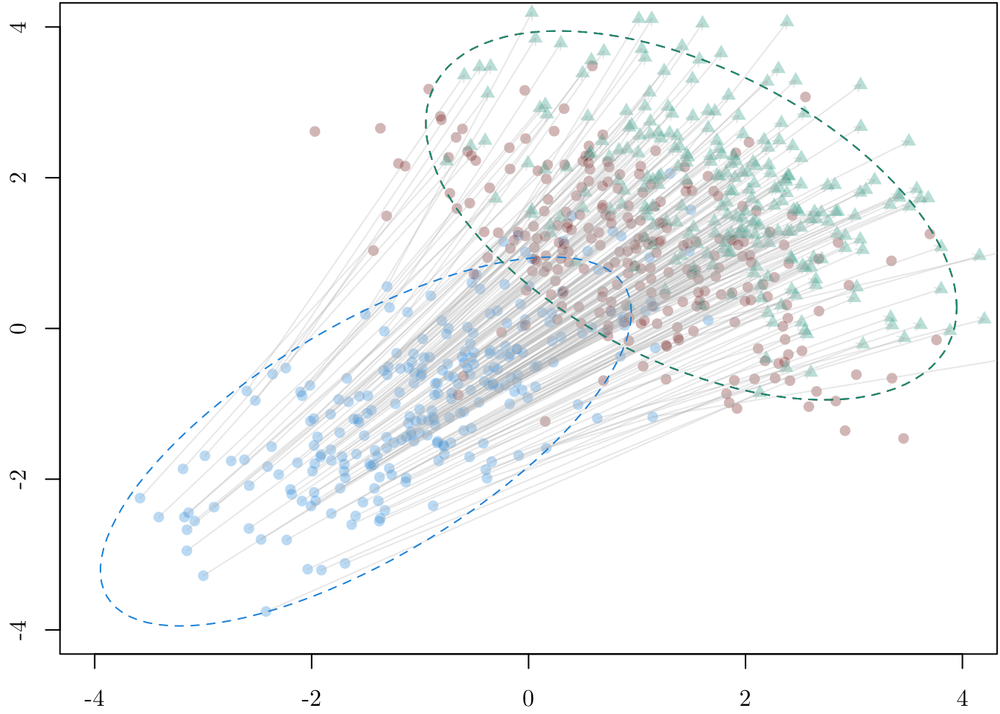
5.2.2 Transport-based Many-to-1 Matching
Let us use optimal transport to perform transport-based optimal many-to-1 matching. We use optimal transport with a uniform source and target distribution. For each unit from the source group (group~0), we select the matched unit from the target group (group~1) as the one wit the maximum transported mass. This way, each unit in the source is matched to exactly one in the target.
The transport_many_to_one() function.
#' @param X_source Source characteristics
#' @param X_target Target characteristics
#' @param method Algorithm to use for transport
transport_many_to_one <- function(X_source,
X_target,
method = "shortsimplex") {
n_source <- nrow(X_source)
n_target <- nrow(X_target)
# Uniform weights
w_source <- rep(1 / n_source, n_source)
w_target <- rep(1 / n_target, n_target)
# Cost matrix
cost <- as.matrix(dist(rbind(X_source, X_target)))
cost <- cost[1:n_source, (n_source + 1):(n_source + n_target)]
# Solve OT plan
ot_plan <- transport::transport(
w_source, w_target, costm = cost, method = method
)
# For each source unit, select the target with the highest mass
best_match <- ot_plan |>
dplyr::group_by(from) |>
dplyr::slice_max(mass, n = 1, with_ties = FALSE) |>
dplyr::ungroup()
# Matched matrix
X_matched <- X_target[best_match$to, , drop = FALSE]
X_matched
}Let us apply the transport_many_to_one() function to get the counterfactuals in both group.
X0 <- as.matrix(df[df$A == 0, c("X1", "X2")])
X1 <- as.matrix(df[df$A == 1, c("X1", "X2")])
X0_tmatch <- transport_many_to_one(X_source = X0, X_target = X1)
X1_tmatch <- transport_many_to_one(X_source = X1, X_target = X0)Codes to create the Figure.
par(mar = c(2.1, 2.1, 2.1, 0.1), mfrow = c(1, 2))
x_lim <- c(-4, 4)
y_lim <- c(-4, 4)
# From 0 to 1
plot(
X0,
pch = 16,
col = adjustcolor(colGpe0, alpha = .3),
xlim = x_lim, ylim = y_lim,
xlab = "", ylab = "",
main = "Matching: from A=0 to A=1",
family = font_family
)
title(xlab = "X1", ylab="X2", line=2, cex.lab=1.2, family = font_family)
points(X1, col = adjustcolor(colGpe1, alpha = .3), pch = 16)
points(X0_tmatch, col = adjustcolor(colGpet, alpha = .3), pch = 17)
# Add arrows from original to transported
arrows(
x0 = X0[, "X1"], y0 = X0[, "X2"],
x1 = X0_tmatch[, 1], y1 = X0_tmatch[, 2],
length = 0.05, col = adjustcolor("gray", alpha = .3)
)
# Add ellipses
draw_ellipse(Mu0, Sig0, col = colGpe0, lty = 2)
draw_ellipse(Mu1, Sig1, col = colGpe1, lty = 2)
# From 1 to 0
plot(
X0,
pch = 16,
col = adjustcolor(colGpe0, alpha = .3),
xlim = x_lim, ylim = y_lim,
xlab = "", ylab = "",
main = "Matching: from A=1 to A=0",
family = font_family
)
title(xlab = "X1", ylab="X2", line=2, cex.lab=1.2, family = font_family)
points(X1, col = adjustcolor(colGpe1, alpha = .3), pch = 16)
points(X1_tmatch, col = adjustcolor(colGpet, alpha = .3), pch = 17)
# Add arrows from original to transported
arrows(
x0 = X1[, "X1"], y0 = X1[, "X2"],
x1 = X1_tmatch[, 1], y1 = X1_tmatch[, 2],
length = 0.05, col = adjustcolor("gray", alpha = .3)
)
# Add ellipses
draw_ellipse(Mu0, Sig0, col = colGpe0, lty = 2)
draw_ellipse(Mu1, Sig1, col = colGpe1, lty = 2)
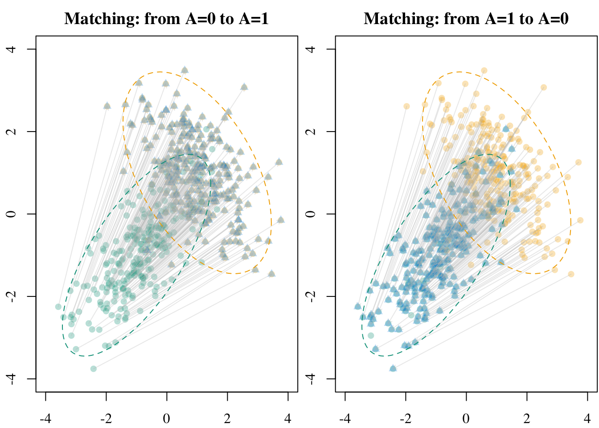
5.2.3 Soft Matching
Let us now turn to optimal transport–based matching where each unit is matched to a weighted combination of units in the other group. This allows us to produce synthetic treated units by assigning weights that sum to 1.
X0 <- as.matrix(df[df$A == 0, c("X1", "X2")])
X1 <- as.matrix(df[df$A == 1, c("X1", "X2")])
n_0 <- nrow(X0)
n_1 <- nrow(X1)Let us use uniform weights:
w_0 <- rep(1 / n_0, n_0)
w_1 <- rep(1 / n_1, n_1)We use the Euclidean distance between units as costs.
cost <- as.matrix(dist(rbind(X0, X1)))
cost <- cost[1:n_0, (n_0 + 1):(n_0 + n_1)]Let us solve the optimal transport problem to transport units from group~0 to group~1.
ot_plan <- transport::transport(
w_0, w_1, costm = cost, method = "shortsimplex"
)We can then use the mapping to create synthetic individuals in group~1. We use the weights given in the mapping to create the synthetic units as fractions of the other points.
ot_plan <- ot_plan |> group_by(from) |> mutate(weight = mass / sum(mass))
assignment <- rep(NA, n_0)
X0_sm <- ot_plan |>
left_join(
as_tibble(X1) |> mutate(to = row_number()),
by = "to"
) |>
mutate(
across(colnames(X1), ~.x * weight)
) |>
group_by(from) |>
summarise(across(colnames(X1), ~ sum(.x))) |>
arrange(from) |>
select(-from) |>
as.matrix()Let us create a function, soft_match() to wrap-up the previous codes.
The soft_match() function.
#' @param X_source Source characteristics
#' @param X_target Target characteristics
#' @param method Algorithm to use for transport
soft_match <- function(X_source,
X_target,
method = "shortsimplex") {
n_source <- nrow(X_source)
n_target <- nrow(X_target)
# Uniform weights
w_source <- rep(1 / n_source, n_source)
w_target <- rep(1 / n_target, n_target)
# Compute cost matrix (Euclidean distances)
cost <- as.matrix(dist(rbind(X_source, X_target)))
cost <- cost[1:n_source, (n_source + 1):(n_source + n_target)]
# Solve OT problem
ot_plan <- transport::transport(
w_source, w_target, costm = cost, method = method
)
# Normalize weights per source unit
ot_plan <- dplyr::group_by(ot_plan, from)
ot_plan <- dplyr::mutate(ot_plan, weight = mass / sum(mass))
# Build transported covariates
X_target_tbl <- tibble::as_tibble(X_target) |>
dplyr::mutate(to = dplyr::row_number())
X_sm <- ot_plan |>
dplyr::left_join(X_target_tbl, by = "to") |>
dplyr::mutate(
dplyr::across(colnames(X_target), ~ .x * weight)
) |>
dplyr::group_by(from) |>
dplyr::summarise(
dplyr::across(colnames(X_target), sum),
.groups = "drop"
) |>
dplyr::arrange(from) |>
dplyr::select(-from) |>
as.matrix()
X_sm
}Let us do soft-matching to get counterfactuals for units from both group 0 and group 1.
X0_sm <- soft_match(X_source = X0 , X_target = X1)
X1_sm <- soft_match(X_source = X1 , X_target = X0)Codes to create the Figure.
par(mar = c(2.1, 2.1, 2.1, 0.1), mfrow = c(1, 2))
x_lim <- c(-4, 4)
y_lim <- c(-4, 4)
# From 0 to 1
plot(
X0,
pch = 16,
col = adjustcolor(colGpe0, alpha = .3),
xlim = x_lim, ylim = y_lim,
xlab = "", ylab = "",
main = "SM: from A=0 to A=1",
family = font_family
)
title(xlab = "X1", ylab="X2", line=2, cex.lab=1.2, family = font_family)
points(X1, col = adjustcolor(colGpe1, alpha = .3), pch = 16)
points(X0_sm, col = adjustcolor(colGpet, alpha = .3), pch = 17)
# Add arrows from original to transported
arrows(
x0 = X0[, "X1"], y0 = X0[, "X2"],
x1 = X0_sm[, 1], y1 = X0_sm[, 2],
length = 0.05, col = adjustcolor("gray", alpha = .3)
)
# Add ellipses
draw_ellipse(Mu0, Sig0, col = colGpe0, lty = 2)
draw_ellipse(Mu1, Sig1, col = colGpe1, lty = 2)
# From 1 to 0
plot(
X0,
pch = 16,
col = adjustcolor(colGpe0, alpha = .3),
xlim = x_lim, ylim = y_lim,
xlab = "", ylab = "",
main = "SM: from A=1 to A=0",
family = font_family
)
title(xlab = "X1", ylab="X2", line=2, cex.lab=1.2, family = font_family)
points(X1, col = adjustcolor(colGpe1, alpha = .3), pch = 16)
points(X1_sm, col = adjustcolor(colGpet, alpha = .3), pch = 17)
# Add arrows from original to transported
arrows(
x0 = X1[, "X1"], y0 = X1[, "X2"],
x1 = X1_sm[, 1], y1 = X1_sm[, 2],
length = 0.05, col = adjustcolor("gray", alpha = .3)
)
# Add ellipses
draw_ellipse(Mu0, Sig0, col = colGpe0, lty = 2)
draw_ellipse(Mu1, Sig1, col = colGpe1, lty = 2)
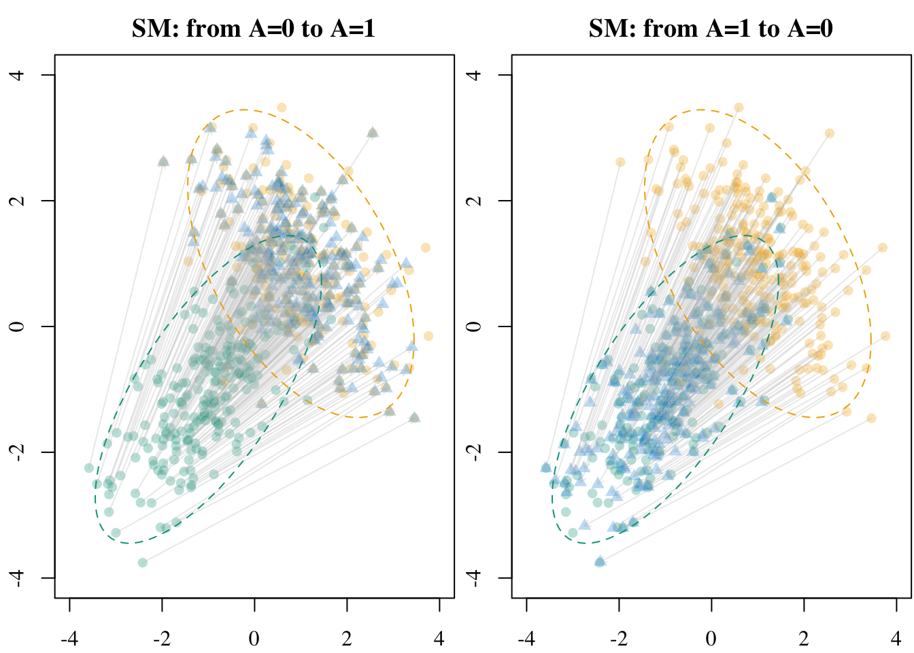
5.2.4 Entropic Regularization via Sinkhorn Algorithm
The optimal transport problem can be computationally intensive (not here with the small amount of observations, though). In such cases, one can consider Entropic regularization via Sinkhorn algorithm, associated to the “Matrix Scaling Problem” in Sinkhorn (1962). Entropic regularization modifies the previous problem by adding a Kullback-Leibler divergence (\(\mathrm{d}_{\mathrm{KL}}\)) term to the optimization goal \[ \min_{\boldsymbol{P}\in\mathcal{U}(\boldsymbol{1}_{n_0},\boldsymbol{1}_{n_1})} \Big\lbrace \langle \boldsymbol{P},\boldsymbol{C}\rangle +\gamma\cdot \mathrm{d}_{\mathrm{KL}}(\boldsymbol{P}||{\boldsymbol{1}_{n_0}}\otimes{\boldsymbol{1}_{n_1}}) \Big\rbrace \tag{5.1}\] where the Kullback-Leibler divergence term corresponds to the opposite of the discrete entropy of the coupling matrix \(\boldsymbol{P}\), \[ H(\boldsymbol{P}) := -\sum_{i,j}P_{i,j}(\log(P_{i,j}) - 1). \] see Proposition 4.3 in Peyré and Cuturi (2019).
Let us make sure that the observations are stored in matrices for each group.
X0 <- as.matrix(df[df$A == 0, c("X1", "X2")])
X1 <- as.matrix(df[df$A == 1, c("X1", "X2")])The number of observations in each group:
n_0 <- nrow(X0)
n_1 <- nrow(X1)We will use uniform weights:
w_0 <- rep(1 / n_0, n_0)
w_1 <- rep(1 / n_1, n_1)We compute the pairwise cost matrix, which is simply the squared Euclidean distance in this example.
cost_mat <- as.matrix(dist(rbind(X0, X1)))^2
C <- cost_mat[1:n_0, (n_0 + 1):(n_0 + n_1)]Then, we can apply the Sinkhorn algorithm to solve the problem.
skh_res <- T4transport::sinkhornD(
D = C, p = 2, wx = w_0, wy = w_1, lambda = 0.1
)We extract the transport plan:
ot_plan_skh <- skh_res$planWe normalize the plan:
row_sums <- rowSums(ot_plan_skh)
ot_plan_skh <- sweep(ot_plan_skh, 1, row_sums, FUN = "/")The transported version of X_1 is the barycentric projection:
X0_skh <- ot_plan_skh %*% X1We wrap these steps in a function, transport_regul().
The transport_regul() function.
#' @param X_source Matrix of observations to transport from the source group.
#' @param X_target Matrix of observations from the target group.
#' @param gamma A regularization parameter (default to 0.1).
transport_regul <- function(X_source,
X_target,
gamma) {
X_source <- as.matrix(X_source)
X_target <- as.matrix(X_target)
n_source <- nrow(X_source)
n_target <- nrow(X_target)
# Uniform weights
w_source <- rep(1 / n_source, n_source)
w_target <- rep(1 / n_target, n_target)
# Pairwise squared Euclidean distance
cost_mat <- as.matrix(dist(rbind(X_source, X_target)))^2
C <- cost_mat[1:n_source, (n_source + 1):(n_source + n_target)]
# Run Sinkhorn with entropic regularization gamma
skh_res <- T4transport::sinkhornD(
D = C, p = 2, wx = w_source, wy = w_target, lambda = gamma
)
# Extract and normalize plan
ot_plan_skh <- skh_res$plan
ot_plan_skh <- sweep(ot_plan_skh, 1, rowSums(ot_plan_skh), FUN = "/")
ot_plan_skh %*% X_target
}We consider the following values for \(\gamma\):
gammas <- c(0.1, 1, 5, 10, 100, 1000, 10000)We transport the observations from group~0 to group~1:
X0_skh_l <- map(
gammas,
~transport_regul(
X_source = X0,
X_target = X1,
gamma = .x
)
)
names(X0_skh_l) <- as.character(gammas)And from group~1 to group~0:
X1_skh_l <- map(
gammas,
~transport_regul(
X_source = X1,
X_target = X0,
gamma = .x
)
)
names(X1_skh_l) <- as.character(gammas)We visualize the results in Figure 5.4.
Codes to create the Figure.
layout(matrix(seq_len(length(gammas) + 1), ncol = 4, byrow = TRUE))
par(mar = c(2.1, 2.1, 2.1, 0.1))
# par(mar = c(2.1, 2.1, 2.1, 0.1), mfrow = c(1, 2))
x_lim <- c(-4, 4)
y_lim <- c(-4, 4)
## OT----
# From 0 to 1
plot(X0,
pch = 16,
col = adjustcolor(colGpe0, alpha = .3),
xlim = x_lim, ylim = y_lim,
xlab = "", ylab = "",
main = "OT: from A=0 to A=1"
)
title(xlab = "X1", ylab="X2", line=2, cex.lab=1.2)
points(X1, col = adjustcolor(colGpe1, alpha = .3), pch = 16)
# Add arrows from original to transported
arrows(
x0 = X0[, "X1"], y0 = X0[, "X2"],
x1 = X0_t[, 1], y1 = X0_t[, 2],
length = 0.05, col = adjustcolor("gray", alpha = .3)
)
points(X0_t, col = adjustcolor(colGpet, alpha = .3), pch = 17)
# True mean and covariance (scaled by 'a')
Mu0 <- rep(a * mu0, 2)
Mu1 <- rep(a * mu1, 2)
Sig0 <- matrix(c(1, r0, r0, 1), 2, 2)
Sig1 <- matrix(c(1, r1, r1, 1), 2, 2)
# Add ellipses
draw_ellipse(Mu0, Sig0, col = colGpe0, lty = 2)
draw_ellipse(Mu1, Sig1, col = colGpe1, lty = 2)
## OT with Entropic Regularization----
for (gamma in gammas) {
X0_skh <- X0_skh_l[[as.character(gamma)]]
# From 0 to 1
plot(
X0,
pch = 16,
col = adjustcolor(colGpe0, alpha = .3),
xlim = x_lim, ylim = y_lim,
xlab = "", ylab = "",
main = latex2exp::TeX(paste0("$\\gamma=", gamma, "$"))
)
title(xlab = "X1", ylab="X2", line=2, cex.lab=1.2)
points(X1, col = adjustcolor(colGpe1, alpha = .3), pch = 16)
# Add arrows from original to transported
arrows(
x0 = X0[, "X1"], y0 = X0[, "X2"],
x1 = X0_skh[, 1], y1 = X0_skh[, 2],
length = 0.05, col = adjustcolor("gray", alpha = .3)
)
points(X0_skh[, "X1"], X0_skh[, "X2"], col = adjustcolor(colGpet, alpha = .3), pch = 17)
# True mean and covariance (scaled by 'a')
Mu0 <- rep(a * mu0, 2)
Mu1 <- rep(a * mu1, 2)
Sig0 <- matrix(c(1, r0, r0, 1), 2, 2)
Sig1 <- matrix(c(1, r1, r1, 1), 2, 2)
# Add ellipses
draw_ellipse(Mu0, Sig0, col = colGpe0, lty = 2)
draw_ellipse(Mu1, Sig1, col = colGpe1, lty = 2)
}
5.2.5 Sequential Transport
We will now transport individuals using sequential transport. The results are sensitive to the ordering within the sequence. We will consider both ordering to illustrate this.
- a first marginal univariate optimal transport along the first dimension (\(X_1\)), then a conditional transport for the second dimension (\(X_2 \mid X_1)\):
sequential_transport_12(), - a first marginal univariate optimal transport along the second dimension (\(X_2\)), then a conditional transport for the first dimension (\(X_1 \mid X_2)\):
sequential_transport_21().
The sequential_transport_12() function.
#' Sequential transport from N(M_source, S_source) to N(M_target, S_target),
#' along X1, then X2 | X1
#'
#' @param X n x 2 matrix of source observations.
#' @param M_source Mean vector of the source distribution (length 2).
#' @param S_source Covariance matrix of the source distribution (2x2).
#' @param M_target Mean vector of the target distribution.
#' @param S_target Covariance matrix of the target distribution.
sequential_transport_12 <- function(X,
M_source,
S_source,
M_target,
S_target) {
# marginal univariate transport along the first coordinate (X_1)
T1x <- qnorm(
pnorm(X[, 1], mean = M_source[1], sd = sqrt(S_source[1, 1])),
mean = M_target[1], sd = sqrt(S_target[1, 1])
)
# conditional parameters for X_2 | X_1
m_source <- M_source[2] + S_source[1, 2] / S_source[1, 1] * (X[, 1] - M_source[1])
s_source <- S_source[2, 2] - S_source[1, 2]^2 / S_source[1, 1]
m_target <- M_target[2] + S_target[1, 2] / S_target[1, 1] * (T1x - M_target[1])
s_target <- S_target[2, 2] - S_target[1, 2]^2 / S_target[1, 1]
# conditional transport for the second coordinate
T2x <- qnorm(
pnorm(X[, 2], mean = m_source, sd = sqrt(s_source)),
mean = m_target, sd = sqrt(s_target)
)
cbind(T1x, T2x)
}The sequential_transport_21() function.
#' Sequential transport from N(M_source, S_source) to N(M_target, S_target),
#' along X2, then X1 | X2
#'
#' @param X n x 2 matrix of source observations.
#' @param M_source Mean vector of the source distribution (length 2).
#' @param S_source Covariance matrix of the source distribution (2x2).
#' @param M_target Mean vector of the target distribution.
#' @param S_target Covariance matrix of the target distribution.
sequential_transport_21 <- function(X, M_source, S_source, M_target, S_target) {
# marginal univariate transport along X_2
T2x <- qnorm(
pnorm(X[, 2], mean = M_source[2], sd = sqrt(S_source[2, 2])),
mean = M_target[2], sd = sqrt(S_target[2, 2])
)
# conditional parameters for X_1 | X_2
m_source <- M_source[1] + S_source[1, 2] / S_source[2, 2] * (X[, 2] - M_source[2])
s_source <- S_source[1, 1] - S_source[1, 2]^2 / S_source[2, 2]
m_target <- M_target[1] + S_target[1, 2] / S_target[2, 2] * (T2x - M_target[2])
s_target <- S_target[1, 1] - S_target[1, 2]^2 / S_target[2, 2]
# conditional transport for X1 | X_2
T1x <- qnorm(
pnorm(X[, 1], mean = m_source, sd = sqrt(s_source)),
mean = m_target, sd = sqrt(s_target)
)
cbind(T1x, T2x)
}We isolate the observations from group 0 and from group 1, and store them as matrices.
X0 <- as.matrix(df[df$A == 0, c("X1", "X2")])
X1 <- as.matrix(df[df$A == 1, c("X1", "X2")])We then transport from group 0 to group group 1 with sequential transport, first transporting \(X_1\) then \(X_2 | X_1\).
X0_st_12 <- sequential_transport_12(
X = X0, M_source = Mu0, S_source = Sig0, M_target = Mu1, S_target = Sig1
)We do the same but for units in group 1 to group 0.
X1_st_12 <- sequential_transport_12(
X = X1, M_source = Mu1, S_source = Sig1, M_target = Mu0, S_target = Sig0
)We also transport from group 0 to group group 1 with sequential transport, first transporting \(X_1\) then \(X_2 | X_1\).
X0_st_21 <- sequential_transport_21(
X = X0, M_source = Mu0, S_source = Sig0, M_target = Mu1, S_target = Sig1
)We do the same but for units in group 1 to group 0.
X1_st_21 <- sequential_transport_21(
X = X1, M_source = Mu1, S_source = Sig1, M_target = Mu0, S_target = Sig0
)Again, we can visualize the results on a scatter plot (Figure 5.5).
Codes to create the Figure.
# Prepare data for the plot
X0 <- df[df$A == 0, c("X1", "X2")]
X1 <- df[df$A == 1, c("X1", "X2")]
par(mar = c(2.1, 2.1, 2.1, 0.1), mfrow = c(2,2))
x_lim <- c(-4, 4)
y_lim <- c(-4, 4)
# From 0 to 1, X1 then X2----
plot(
X0,
pch = 16,
col = adjustcolor(colGpe0, alpha = .3),
xlim = x_lim, ylim = y_lim,
xlab = "", ylab = "",
main = "",
family = font_family
)
title(xlab = "X1", ylab="X2", line=2, cex.lab=1.2, family = font_family)
title(main = "A=0 to A=1, X1 then X2", line=.5, cex.lab=1.2, family = font_family)
points(X1, col = adjustcolor(colGpe1, alpha = .3), pch = 16)
points(X0_st_12, col = adjustcolor(colGpet, alpha = .3), pch = 17)
# Add arrows from original to transported
arrows(
x0 = X0$X1, y0 = X0$X2,
x1 = X0_st_12[, 1], y1 = X0_st_12[, 2],
length = 0.05, col = adjustcolor("gray", alpha = .3)
)
# True mean and covariance (scaled by 'a')
Mu0 <- rep(a * mu0, 2)
Mu1 <- rep(a * mu1, 2)
Sig0 <- matrix(c(1, r0, r0, 1), 2, 2)
Sig1 <- matrix(c(1, r1, r1, 1), 2, 2)
# Add ellipses
draw_ellipse(Mu0, Sig0, col = colGpe0, lty = 2)
draw_ellipse(Mu1, Sig1, col = colGpe1, lty = 2)
# From 1 to 0, X1 then X2----
plot(
X0,
pch = 16,
col = adjustcolor(colGpe0, alpha = .3),
xlim = x_lim, ylim = y_lim,
xlab = "", ylab = "",
main = "",
family = font_family
)
title(xlab = "X1", ylab="X2", line=2, cex.lab=1.2, family = font_family)
title(main = "A=1 to A=0, X1 then X2", line=.5, cex.lab=1.2, family = font_family)
points(X1, col = adjustcolor(colGpe1, alpha = .3), pch = 16)
points(X1_st_12, col = adjustcolor(colGpet, alpha = .3), pch = 17)
# Add arrows from original to transported
arrows(
x0 = X1$X1, y0 = X1$X2,
x1 = X1_st_12[, 1], y1 = X1_st_12[, 2],
length = 0.05, col = adjustcolor("gray", alpha = .3)
)
# Add ellipses
draw_ellipse(Mu0, Sig0, col = colGpe0, lty = 2)
draw_ellipse(Mu1, Sig1, col = colGpe1, lty = 2)
# From A=0 to A=1, X2 then X1
plot(
X0,
pch = 16,
col = adjustcolor(colGpe0, alpha = .3),
xlim = x_lim, ylim = y_lim,
xlab = "", ylab = "",
main = "",
family = font_family
)
title(xlab = "X1", ylab="X2", line=2, cex.lab=1.2, family = font_family)
title(main = "A=0 to A=1, X2 then X1", line=.5, cex.lab=1.2, family = font_family)
points(X1, col = adjustcolor(colGpe1, alpha = .3), pch = 16)
points(X0_st_21, col = adjustcolor(colGpet, alpha = .3), pch = 17)
# Add arrows from original to transported
arrows(
x0 = X0$X1, y0 = X0$X2,
x1 = X0_st_21[, 1], y1 = X0_st_21[, 2],
length = 0.05, col = adjustcolor("gray", alpha = .3)
)
# Add ellipses
draw_ellipse(Mu0, Sig0, col = colGpe0, lty = 2)
draw_ellipse(Mu1, Sig1, col = colGpe1, lty = 2)
# From A=1 to A=0, X2 then X1
plot(
X0,
pch = 16,
col = adjustcolor(colGpe0, alpha = .3),
xlim = x_lim, ylim = y_lim,
xlab = "", ylab = "",
main = "",
family = font_family
)
title(xlab = "X1", ylab="X2", line=2, cex.lab=1.2, family = font_family)
title(main = "A=1 to A=0, X2 then X1", line=.5, cex.lab=1.2, family = font_family)
points(X1, col = adjustcolor(colGpe1, alpha = .3), pch = 16)
points(X1_st_21, col = adjustcolor(colGpet, alpha = .3), pch = 17)
# Add arrows from original to transported
arrows(
x0 = X1$X1, y0 = X1$X2,
x1 = X1_st_21[, 1], y1 = X1_st_21[, 2],
length = 0.05, col = adjustcolor("gray", alpha = .3)
)
# Add ellipses
draw_ellipse(Mu0, Sig0, col = colGpe0, lty = 2)
draw_ellipse(Mu1, Sig1, col = colGpe1, lty = 2)
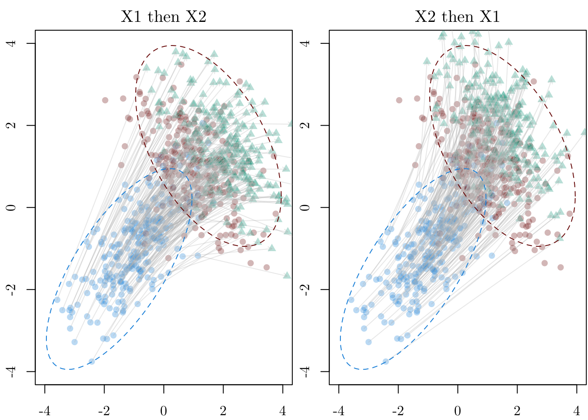
Codes for the Figure in the paper
scale <- 1.42
filename <- "gaussian-transport-0to1"
tikz(paste0("figs/", filename, ".tex"), width = scale*2.2, height = scale*1)
layout(matrix(1:3, ncol = 3), width = c(1, rep(.9, 2)))
par(mar = c(2.1, 2.1, 2.1, 0.1))
x_lim <- c(-4, 4)
y_lim <- c(-4, 4)
cex_pts <- .5
alpha_arrows <- .2
length_arrow <- 0
# From 0 to 1, with OT
plot(X0,
pch = 16, cex = cex_pts,
col = adjustcolor(colGpe0, alpha = .3),
xlim = x_lim, ylim = y_lim,
xlab = "", ylab = "",
main = "",
family = font_family,
axes = FALSE
)
axis(1, at = -3:3)
axis(2, at = -3:3)
title(xlab = "X1", ylab="X2", line=2, cex.lab=1, family = font_family)
title(main = "OT", line=.5, cex.main = 1, family = font_family, font.main=1)
points(X1, col = adjustcolor(colGpe1, alpha = .3), pch = 16, cex = cex_pts)
points(X0_t, col = adjustcolor(colour_methods[["OT"]], alpha = .3), pch = 17, cex = cex_pts)
# Add arrows from original to transported
arrows(
x0 = X0$X1, y0 = X0$X2,
x1 = X0_t[, 1], y1 = X0_t[, 2],
length = length_arrow, col = adjustcolor("gray", alpha = alpha_arrows)
)
# True mean and covariance (scaled by 'a')
Mu0 <- rep(a * mu0, 2)
Mu1 <- rep(a * mu1, 2)
Sig0 <- matrix(c(1, r0, r0, 1), 2, 2)
Sig1 <- matrix(c(1, r1, r1, 1), 2, 2)
# Covariance of transported points (via OT map)
Sigma0_transport <- ot_map_0_to_1$A %*% Sig0 %*% t(ot_map_0_to_1$A)
# Add ellipses
draw_ellipse(Mu0, Sig0, col = colGpe0, lty = 2)
draw_ellipse(Mu1, Sig1, col = colGpe1, lty = 2)
par(mar = c(2.1, 1.1, 2.1, 0.1))
# From 0 to 1, X1 then X2----
plot(
X0,
pch = 16, cex = cex_pts,
col = adjustcolor(colGpe0, alpha = .3),
xlim = x_lim, ylim = y_lim,
xlab = "", ylab = "",
main = "",
family = font_family,
axes = FALSE
)
axis(1, at = -3:3)
title(xlab = "X1", ylab="X2", line=2, cex.lab=1, family = font_family)
title(main = "ST(1)", line=.5, cex.main = 1, family = font_family, font.main=1)
points(X1, col = adjustcolor(colGpe1, alpha = .3), pch = 16, cex = cex_pts)
points(X0_st_12, col = adjustcolor(colour_methods[["seq_1"]], alpha = .3), pch = 17, cex = cex_pts)
# Add arrows from original to transported
arrows(
x0 = X0$X1, y0 = X0$X2,
x1 = X0_st_12[, 1], y1 = X0_st_12[, 2],
length = length_arrow, col = adjustcolor("gray", alpha = .4)
)
# Add ellipses
draw_ellipse(Mu0, Sig0, col = colGpe0, lty = 2)
draw_ellipse(Mu1, Sig1, col = colGpe1, lty = 2)
# From A=0 to A=1, X2 then X1----
plot(
X0,
pch = 16, cex = cex_pts,
col = adjustcolor(colGpe0, alpha = alpha_arrows),
xlim = x_lim, ylim = y_lim,
xlab = "", ylab = "",
main = "",
family = font_family,
axes = FALSE
)
axis(1, at = -3:3)
title(xlab = "X1", ylab="X2", line=2, cex.lab=1, family = font_family)
title(main = "ST(2)", line=.5, cex.main = 1, family = font_family, font.main=1)
points(X1, col = adjustcolor(colGpe1, alpha = .3), pch = 16, cex = cex_pts)
points(X0_st_21, col = adjustcolor(colour_methods[["seq_2"]], alpha = .3), pch = 17, cex = cex_pts)
# Add arrows from original to transported
arrows(
x0 = X0$X1, y0 = X0$X2,
x1 = X0_st_21[, 1], y1 = X0_st_21[, 2],
length = length_arrow, col = adjustcolor("gray", alpha = alpha_arrows)
)
# Add ellipses
draw_ellipse(Mu0, Sig0, col = colGpe0, lty = 2)
draw_ellipse(Mu1, Sig1, col = colGpe1, lty = 2)
# legend(
# "bottomright",
# pch = c(16, 16, 17),
# col = c(colGpe0, colGpe1, colGpet),
# legend = c("$A=0$", "$A=1$", "Transp."),
# bty = "n"
# )
dev.off()
plot_to_pdf(filename = filename, path = "./figs/", keep_tex = FALSE, crop = FALSE)5.2.6 Illustration for a Single Unit
export_tikz <- FALSE
# Focus on a unit
i <- 11
X0 <- df[df$A == 0, c("X1", "X2")]
X1 <- df[df$A == 1, c("X1", "X2")]
if (export_tikz == TRUE)
tikz('figs/gaussian-1-transport.tex', width = 2, height = 2.2)
par(mar = c(2.1, 2.1, 1.8, 0.1))
x_lim <- c(-4, 4)
y_lim <- c(-4, 4)
# X1 then X2
plot(
X0,
pch = 16,
col = adjustcolor(colGpe0, alpha = .3),
xlim = x_lim, ylim = y_lim,
xlab = "", ylab = "",
main = "",
family = font_family
)
title(xlab = "X1", ylab="X2", line=2, cex.lab=1.2, family = font_family)
# title(main = "X1 then X2", line=.5, cex.lab=1.2, family = font_family)
points(X1, col = adjustcolor(colGpe1, alpha = .3), pch = 16)
# Individual of interest
points(X0[i, ], col = adjustcolor(colGpe0, alpha = 1), pch = 15, cex = 1.5)
points(X0_t[i, 1], X0_t[i, 2], col = adjustcolor(colour_methods[["OT"]], alpha = 1), pch = 15, cex = 1.5)
points(X0_skh_l[["0.1"]][i, 1], X0_skh_l[["0.1"]][i, 2], col = adjustcolor(colour_methods[["skh"]], alpha = 1), pch = 15, cex = 1.5)
points(X0_st_12[i, 1], X0_st_12[i, 2], col = adjustcolor(colour_methods[["seq_1"]], alpha = 1), pch = 15, cex = 1.5)
points(X0_st_21[i, 1], X0_st_21[i, 2], col = adjustcolor(colour_methods[["seq_2"]], alpha = 1), pch = 15, cex = 1.5)
length_arrow <- 0.1
lwd_arrow <- 2
# OT
arrows(
x0 = X0$X1[i], y0 = X0$X2[i],
x1 = X0_t[i, 1], y1 = X0_t[i, 2],
length = length_arrow, col = adjustcolor(colour_methods[["OT"]], alpha = 1),
lwd = lwd_arrow, lty = 2
)
# Regularization
arrows(
x0 = X0$X1[i], y0 = X0$X2[i],
x1 = X0_skh_l[["0.1"]][i, 1], y1 = X0_skh_l[["0.1"]][i, 2],
length = length_arrow, col = adjustcolor(colour_methods[["skh"]], alpha = 1),
lwd = lwd_arrow, lty = 2
)
# Seq OT (1): X_1 first
points(X0_st_12[i, 1], X0$X2[i], col = adjustcolor(colour_methods[["seq_1"]], alpha = .5), pch = 16, cex = 1.5)
arrows(
x0 = X0$X1[i], y0 = X0$X2[i],
x1 = X0_st_12[i, 1], y1 = X0$X2[i],
length = length_arrow, col = adjustcolor(colour_methods[["seq_1"]], alpha = 1),
lwd = lwd_arrow
)
arrows(
x0 = X0_st_12[i, 1], y0 = X0$X2[i],
x1 = X0_st_12[i, 1], y1 = X0_st_12[i, 2],
length = length_arrow, col = adjustcolor(colour_methods[["seq_1"]], alpha = 1),
lwd = lwd_arrow
)
# Seq OT (2): X_2 first
points(X0$X1[i], X0_st_21[i,2], col = adjustcolor(colour_methods[["seq_2"]], alpha = .5), pch = 16, cex = 1.5)
arrows(
x0 = X0$X1[i], y0 = X0$X2[i],
x1 = X0$X1[i], y1 = X0_st_21[i,2],
length = length_arrow, col = adjustcolor(colour_methods[["seq_2"]], alpha = 1),
lwd = lwd_arrow
)
arrows(
x0 = X0$X1[i], y0 = X0_st_21[i,2],
x1 = X0_st_21[i, 1], y1 = X0_st_21[i, 2],
length = length_arrow, col = adjustcolor(colour_methods[["seq_2"]], alpha = 1),
lwd = lwd_arrow
)
legend(
"topleft",
legend = c("$x_i$ (Obs.)", "OT", "Sinkhorn", "Seq. OT (1)", "Seq. OT (2)"),
col = c(colGpe0, colour_methods[c("OT", "skh", "seq_1", "seq_2")]),
pch = 15, pt.cex = 1.5, cex = 1,
bty = "n"
)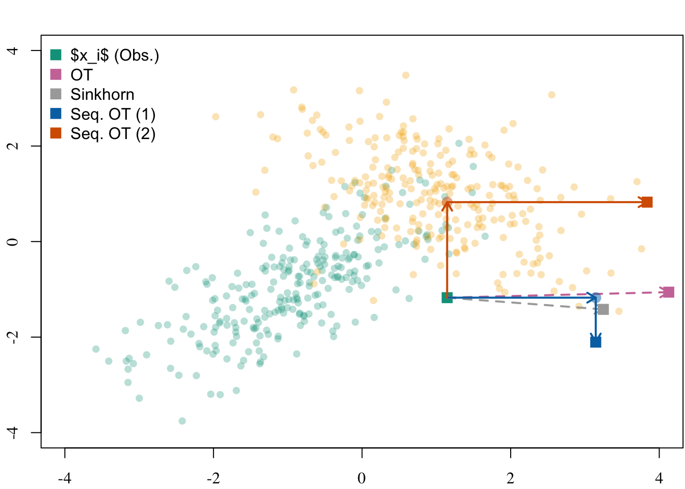
if (export_tikz == TRUE) {
dev.off()
plot_to_pdf(filename = "gaussian-1-transport", path = "./figs/", keep_tex = FALSE, crop = TRUE)
}5.3 Causal Effect
We first generate (again) some data, using the DGP presented in Section 13.1.
df <- gen_data(
n = 500,
mu0 = -1, mu1 = +1,
r0 = +.7, r1 = -.5, a = 1,
seed = 12345
)5.3.1 With Causal Mediation Analysis
Let us create a dataset, tb, with only the binary response (Y), the binary treatment (A), and the two covariates.
tb <- df[, c("Y", "A", "X1", "X2")]
A_name <- "A"
A_untreated <- 0
Y_name <- "Y"med_mod_12 <- mediation::multimed(
outcome = "Y",
med.main = "X1",
med.alt = "X2",
treat = "A",
data = df
)
med_mod_21 <- mediation::multimed(
outcome = "Y",
med.main = "X2",
med.alt = "X1",
treat = "A",
data = df
)
Warning
We do not load the {mediation} package since it creates multiple conflicts with useful functions from tidyverse (including select()).
Let us retrieve \(\bar{\delta}(0)\) (average causal mediation effect for \(a=0\)):
delta_0_med <- mean((med_mod_12$d0.lb + med_mod_12$d0.ub) / 2) +
mean((med_mod_21$d0.lb + med_mod_21$d0.ub) / 2)
delta_0_med[1] 0.9085616The total average effect, \(\bar{\tau}\):
(tot_effect_med <- med_mod_12$tau) A
3.943122 We can then deduct the average direct effect for \(a=1\), i.e., \(\bar{\zeta}(1)\):
(zeta_1_med <- tot_effect_med-delta_0_med) A
3.03456 Let us also retrieve \(\bar{\delta}(1)\) (average causal mediation effect for \(a=1\)) and \(\bar{\zeta}(0)\) (average direct effect for \(a=0\)):
delta_1_med <- mean((med_mod_12$d1.lb + med_mod_12$d1.ub) / 2) +
mean((med_mod_21$d1.lb + med_mod_21$d1.ub) / 2)
zeta_0_med <- tot_effect_med - delta_1_med
c(delta_1_med, zeta_0_med) A
0.6905634 3.2525583 5.3.2 With Optimal Transport
We define a function, causal_effects_cf() to compute the causal effect of \(A\) on the outcome \(Y\), for the treated individuals.
#' Estimation of total causal effect using counterfactuals.
#'
#' @param data_untreated Dataset with the untreated units only.
#' @param data_treated Dataset with the treated units only.
#' @param data_cf_untreated Counterfactuals for untreated had they been treated.
#' @param data_cf_treated Counterfactuals for treated had they been untreated.
#' @param Y_name Name of the column with the outcome variable.
#' @param A_name Name of the column with the treatment variable.
#' @param A_untreated Value of the treatment for the untreated units.
#'
#' @returns A list:
#' - `delta_0_i`: \eqn{\delta_(0)}, individual causal mediation effects for
#' \eqn{a=0} (computed on untreated),
#' - `delta_0`: \eqn{\bar{\delta}(0)}, average causal mediation effect for
#' \eqn{a=0} (computed on untreated),
#' - `delta_1_i`: \eqn{\delta_(1)}, individual causal mediation effects for
#' \eqn{a=1} (computed on treated),
#' - `delta_1`: \eqn{\bar{\delta}(1)}, average causal mediation effect for
#' \eqn{a=1} (computed on treated),
#' - `zeta_0_i`: \eqn{\zeta_(0)}, individual causal mediation effects for
#' \eqn{a=0} (computed on treaded),
#' - `zeta_0`: \eqn{\bar{\zeta}(0)}, average causal mediation effect for
#' \eqn{a=0} (computed on treated),
#' - `zeta_1_i`: \eqn{\zeta_(1)}, individual causal mediation effects for
#' \eqn{a=1} (computed on untreaded),
#' - `zeta_1`: \eqn{\bar{\zeta}(1)}, average causal mediation effect for
#' \eqn{a=1} (computed on untreated),
#' - `tot_effect`: \eqb{\tau}: average total effect (\eqn{\bar{\delta}(0) +
#' \bar{\zeta}(1)}).
#'
#' @importFrom randomForest randomForest
#' @importFrom dplyr pull select
#' @importFrom stats predict
#' @md
causal_effects_cf <- function(data_untreated,
data_treated,
data_cf_untreated,
data_cf_treated,
Y_name,
A_name,
A_untreated) {
n_untreated <- nrow(data_untreated)
n_treated <- nrow(data_treated)
# Outcome model for untreated
mu_untreated_model <- randomForest(
x = data_untreated |> dplyr::select(-!!Y_name, -!!A_name),
y = pull(data_untreated, !!Y_name)
)
# Outcome model for treated
mu_treated_model <- randomForest(
x = data_treated |> dplyr::select(-!!Y_name, -!!A_name),
y = pull(data_treated, !!Y_name)
)
# Observed outcome
y_untreated_obs <- data_untreated |> pull(!!Y_name)
y_treated_obs <- data_treated |> pull(!!Y_name)
# Natural Indirect Effect, using predictions
delta_0_i <- predict(mu_untreated_model, newdata = data_cf_untreated) -
predict(mu_untreated_model)
delta_0 <- mean(delta_0_i)
delta_1_i <- predict(mu_treated_model) -
predict(mu_treated_model, newdata = data_cf_treated)
delta_1 <- mean(delta_1_i)
# Natural Indirect Effect, using observed variables
delta_0_i_obs <- predict(mu_untreated_model, newdata = data_cf_untreated) -
y_untreated_obs
delta_0_obs <- mean(delta_0_i_obs)
delta_1_i_obs <- y_treated_obs -
predict(mu_treated_model, newdata = data_cf_treated)
delta_1_obs <- mean(delta_1_i_obs)
# Natural Direct Effect (only predictions)
zeta_0_i <- predict(mu_treated_model, newdata = data_cf_treated) -
predict(mu_untreated_model, newdata = data_cf_treated)
zeta_0 <- mean(zeta_0_i)
zeta_1_i <- predict(mu_treated_model, newdata = data_cf_untreated) -
predict(mu_untreated_model, newdata = data_cf_untreated)
zeta_1 <- mean(zeta_1_i)
# Total Causal Effect for treated
tot_effect <- delta_0 + zeta_1
tot_effect_obs <- delta_0_obs + zeta_1
list(
delta_0_i = delta_0_i,
delta_1_i = delta_1_i,
zeta_0_i = zeta_0_i,
zeta_1_i = zeta_1_i,
delta_0_i_obs = delta_0_i_obs,
delta_1_i_obs = delta_1_i_obs,
delta_0 = delta_0,
delta_1 = delta_1,
zeta_0 = zeta_0,
zeta_1 = zeta_1,
delta_0_obs = delta_0_obs,
delta_1_obs = delta_1_obs,
tot_effect = tot_effect,
tot_effect_obs = tot_effect_obs
)
}We use a random forest to estimate the outcome model.
library(randomForest)We apply this function to our simulated dataset.
tb_untreated <- tb |> filter(!!sym(A_name) == !!A_untreated)
tb_treated <- tb |> filter(!!sym(A_name) != !!A_untreated)
causal_effects_ot <- causal_effects_cf(
data_untreated = tb_untreated,
data_treated = tb_treated,
data_cf_untreated = as_tibble(X0_t),
data_cf_treated = as_tibble(X1_t),
Y_name = Y_name,
A_name = A_name,
A_untreated = A_untreated
)
cbind(
delta_0 = causal_effects_ot$delta_0,
zeta_1 = causal_effects_ot$zeta_1,
delta_1 = causal_effects_ot$delta_1,
zeta_0 = causal_effects_ot$zeta_0,
tot_effect = causal_effects_ot$tot_effect,
tot_effect_obs = causal_effects_ot$tot_effect_obs
) delta_0 zeta_1 delta_1 zeta_0 tot_effect tot_effect_obs
[1,] 0.9422158 3.153563 0.2031006 3.781928 4.095779 4.0834475.3.3 With Transport-based Matching
We apply the same function as that used with the counterfactuals obtained with optimal transport (causal_effects_cf()). However, here, we feed it with the counterfactuals obtained with the transport-based many-to-one matching (Section 5.2.2).
causal_effects_tmatch <- causal_effects_cf(
data_untreated = tb_untreated,
data_treated = tb_treated,
data_cf_untreated = as_tibble(X0_tmatch) |> magrittr::set_colnames(c("X1", "X2")),
data_cf_treated = as_tibble(X1_tmatch) |> magrittr::set_colnames(c("X1", "X2")),
Y_name = Y_name,
A_name = A_name,
A_untreated = A_untreated
)5.3.4 With Entropic Regularization
We apply the same function as that used with the counterfactuals obtained with optimal transport (causal_effects_cf()). However, here, we feed it with the counterfactuals obtained with the regularization method (Section 5.2.4).
causal_effect_skh <- map2(
X0_skh_l, X1_skh_l,
~causal_effects_cf(
data_untreated = tb_untreated,
data_treated = tb_treated,
data_cf_untreated = as_tibble(.x) |> magrittr::set_colnames(c("X1", "X2")),
data_cf_treated = as_tibble(.y) |> magrittr::set_colnames(c("X1", "X2")),
Y_name = Y_name,
A_name = A_name,
A_untreated = A_untreated
)
)
map(
causal_effect_skh,
~tibble(
delta_0 = .x$delta_0,
zeta_1 = .x$zeta_1,
delta_1 = .x$delta_1,
zeta_0 = .x$zeta_0,
tot_effect = .x$tot_effect,
tot_effect_obs = .x$tot_effect_obs
)
) |>
list_rbind(names_to = "gamma")# A tibble: 7 × 7
gamma delta_0 zeta_1 delta_1 zeta_0 tot_effect tot_effect_obs
<chr> <dbl> <dbl> <dbl> <dbl> <dbl> <dbl>
1 0.1 0.793 3.12 0.0992 3.61 3.92 3.91
2 1 0.854 3.10 0.0181 3.88 3.95 3.96
3 5 0.834 3.14 0.214 3.68 3.98 3.97
4 10 0.830 3.16 -0.0158 3.92 3.99 3.98
5 100 0.825 3.24 0.380 3.46 4.07 4.06
6 1000 1.18 2.78 0.383 3.97 3.96 3.96
7 10000 1.18 2.74 0.495 3.84 3.93 3.925.3.5 With Sequential Optimal Transport
Again, we causal_effects_cf()), feeding it with the counterfactuals obtained with sequential transport (sec-cf-sot). For those where we first transport \(X_1\) and then \(X_2 \mid X_1\):
causal_effect_sot_12 <- causal_effects_cf(
data_untreated = tb_untreated,
data_treated = tb_treated,
data_cf_untreated = as_tibble(X0_st_12) |> magrittr::set_colnames(c("X1", "X2")),
data_cf_treated = as_tibble(X1_st_12) |> magrittr::set_colnames(c("X1", "X2")),
Y_name = Y_name,
A_name = A_name,
A_untreated = A_untreated
)And for the counterfactuales obtained by sequential transport where we first transport \(X_2\) and then \(X_1 \mid X_2\):
causal_effect_sot_21 <- causal_effects_cf(
data_untreated = tb_untreated,
data_treated = tb_treated,
data_cf_untreated = as_tibble(X0_st_21) |> magrittr::set_colnames(c("X1", "X2")),
data_cf_treated = as_tibble(X1_st_21) |> magrittr::set_colnames(c("X1", "X2")),
Y_name = Y_name,
A_name = A_name,
A_untreated = A_untreated
)5.3.6 Summary
Code
tribble(
~Method, ~Name, ~Value,
"Theoretical", "delta(0)", (a1+a2) * (mu1-mu0),
"Theoretical", "delta(1)", (a1+a2) * (mu1-mu0),
"Theoretical", "zeta(0)", a0,
"Theoretical", "zeta(1)", a0,
"Theoretical", "tau", (a1+a2) * (mu1-mu0) + a0,
#
"Mediation", "delta(0)", delta_0_med,
"Mediation", "delta(1)", delta_1_med,
"Mediation", "zeta(0)", zeta_0_med,
"Mediation", "zeta(1)", zeta_1_med,
"Mediation", "tau", tot_effect_med,
#
"OT", "delta(0)", causal_effects_ot$delta_0,
"OT", "delta(1)", causal_effects_ot$delta_1,
"OT", "zeta(0)", causal_effects_ot$zeta_0,
"OT", "zeta(1)", causal_effects_ot$zeta_1,
"OT", "tau", causal_effects_ot$tot_effect,
#
"OT (Obs)", "delta(0)", causal_effects_ot$delta_0_obs,
"OT (Obs)", "delta(1)", causal_effects_ot$delta_1_obs,
"OT (Obs)", "tau", causal_effects_ot$tot_effect_obs,
#
"Matching", "delta(0)", causal_effects_tmatch$delta_0,
"Matching", "delta(1)", causal_effects_tmatch$delta_1,
"Matching", "zeta(0)", causal_effects_tmatch$zeta_0,
"Matching", "zeta(1)", causal_effects_tmatch$zeta_1,
"Matching", "tau", causal_effects_tmatch$tot_effect,
#
"Matching (Obs)", "delta(0)", causal_effects_tmatch$delta_0_obs,
"Matching (Obs)", "delta(1)", causal_effects_tmatch$delta_1_obs,
"Matching (Obs)", "tau", causal_effects_tmatch$tot_effect_obs,
#
"Sinkhorn (gamma=.1)", "delta(0)", causal_effect_skh[["0.1"]]$delta_0,
"Sinkhorn (gamma=.1)", "delta(1)", causal_effect_skh[["0.1"]]$delta_1,
"Sinkhorn (gamma=.1)", "zeta(0)", causal_effect_skh[["0.1"]]$zeta_0,
"Sinkhorn (gamma=.1)", "zeta(1)", causal_effect_skh[["0.1"]]$zeta_1,
"Sinkhorn (gamma=.1)", "tau", causal_effect_skh[["0.1"]]$tot_effect,
#
"Sinkhorn (gamma=.1) (Obs)", "delta(0)", causal_effect_skh[["0.1"]]$delta_0_obs,
"Sinkhorn (gamma=.1) (Obs)", "delta(1)", causal_effect_skh[["0.1"]]$delta_1_obs,
"Sinkhorn (gamma=.1) (Obs)", "tau", causal_effect_skh[["0.1"]]$tot_effect_obs,
#
"SOT (1)", "delta(0)", causal_effect_sot_12$delta_0,
"SOT (1)", "delta(1)", causal_effect_sot_12$delta_1,
"SOT (1)", "zeta(0)", causal_effect_sot_12$zeta_0,
"SOT (1)", "zeta(1)", causal_effect_sot_12$zeta_1,
"SOT (1)", "tau", causal_effect_sot_12$tot_effect,
#
"SOT (1) (Obs)", "delta(0)", causal_effect_sot_12$delta_0_obs,
"SOT (1) (Obs)", "delta(1)", causal_effect_sot_12$delta_1_obs,
"SOT (1) (Obs)", "tau", causal_effect_sot_12$tot_effect_obs,
#
"SOT (2)", "delta(0)", causal_effect_sot_21$delta_0,
"SOT (2)", "delta(1)", causal_effect_sot_21$delta_1,
"SOT (2)", "zeta(0)", causal_effect_sot_21$zeta_0,
"SOT (2)", "zeta(1)", causal_effect_sot_21$zeta_1,
"SOT (2)", "tau", causal_effect_sot_21$tot_effect,
#
"SOT (2) (Obs)", "delta(0)", causal_effect_sot_21$delta_0_obs,
"SOT (2) (Obs)", "delta(1)", causal_effect_sot_21$delta_1_obs,
"SOT (2) (Obs)", "tau", causal_effect_sot_21$tot_effect_obs
) |>
pivot_wider(names_from = "Name", values_from = "Value")# A tibble: 12 × 6
Method `delta(0)` `delta(1)` `zeta(0)` `zeta(1)` tau
<chr> <dbl> <dbl> <dbl> <dbl> <dbl>
1 Theoretical 1 1 3 3 4
2 Mediation 0.909 0.691 3.25 3.03 3.94
3 OT 0.942 0.203 3.78 3.15 4.10
4 OT (Obs) 0.930 0.208 NA NA 4.08
5 Matching 0.862 0.0860 3.85 3.08 3.94
6 Matching (Obs) 0.858 0.0880 NA NA 3.93
7 Sinkhorn (gamma=.1) 0.793 0.0992 3.61 3.12 3.92
8 Sinkhorn (gamma=.1) (Obs) 0.791 0.117 NA NA 3.91
9 SOT (1) 1.01 0.116 3.90 3.14 4.15
10 SOT (1) (Obs) 1.00 0.118 NA NA 4.14
11 SOT (2) 0.904 0.114 3.95 3.04 3.94
12 SOT (2) (Obs) 0.889 0.122 NA NA 3.93Let us have a look at the distribution of the individual causal effects (Figure 5.6).
Codes to create the Figure.
plot_hist_effects <- function(x,
var_name,
tikz = FALSE,
fill = "red",
method_main = "",
x_lim = NULL,
effect_ylab = "",
print_method_main = TRUE,
print_x_axis = TRUE,
print_y_axis = TRUE) {
# effect label (LaTeX)
name_effect <- dplyr::case_when(
stringr::str_detect(var_name, "^delta_0") ~ "$\\delta_i(0)$",
stringr::str_detect(var_name, "^zeta_1") ~ "$\\zeta_i(1)$",
stringr::str_detect(var_name, "^tot_effect") ~ "$\\tau_i(1)$",
TRUE ~ "other"
)
if (tikz == FALSE) name_effect <- latex2exp::TeX(name_effect)
# data
data_plot <- if (var_name == "tot_effect") x[["delta_0_i"]] + x[["zeta_1_i"]] else x[[var_name]]
# hist
if (is.null(x_lim)) {
hist(data_plot, main = "", xlab = "", ylab = "", family = font_family,
col = fill, axes = FALSE)
} else {
hist(data_plot, main = "", xlab = "", ylab = "", family = font_family,
col = fill, xlim = x_lim, axes = FALSE)
}
if (print_x_axis) axis(1, family = font_family)
if (print_y_axis) axis(2, family = font_family)
# main title = method (only first row)
if (print_method_main && method_main != "") {
title(main = method_main, cex.main = 1, family = font_family, font.main = 1)
}
# y-axis label = effect name (only first column)
if (effect_ylab != "") {
title(ylab = effect_ylab, line = 2, cex.lab = 1, family = font_family, font.main = 1)
}
abline(v = mean(data_plot), col = "darkred", lty = 2, lwd = 2)
invisible(name_effect)
}
export_tikz <- FALSE
scale <- 1.475
file_name <- "gaussian-indiv-effects"
width_tikz <- 2.7*scale
height_tikz <- 1.5*scale
if (export_tikz == TRUE)
tikz(paste0("figs/", file_name, ".tex"), width = width_tikz, height = height_tikz)
layout(
t(matrix(1:(3*5), byrow = TRUE, ncol = 3)),
widths = c(1, rep(.72, 4)), # 5 columns
heights = c(1, rep(.9, 2)) # 3 rows
)
x_lim_list <- list(
"delta_0_i" = c(-3, 6),
"zeta_1_i" = c(-3, 8),
"tot_effect" = c(-4, 14)
)
for (i in 1:4) {
x <- dplyr::case_when(
i == 1 ~ causal_effects_ot,
# i == 2 ~ causal_effects_tmatch,
i == 2 ~ causal_effect_skh[["0.1"]],
i == 3 ~ causal_effect_sot_12,
i == 4 ~ causal_effect_sot_21
)
method <- dplyr::case_when(
i == 1 ~ "OT",
# i == 2 ~ "OT-M",
i == 2 ~ "SKH",
i == 3 ~ "ST(1)",
i == 4 ~ "ST(2)"
)
colour <- dplyr::case_when(
i == 1 ~ colour_methods[["OT"]],
# i == 2 ~ colour_methods[["OT-M"]],
i == 2 ~ colour_methods[["skh"]],
i == 3 ~ colour_methods[["seq_1"]],
i == 4 ~ colour_methods[["seq_2"]]
)
for (var_name in c("delta_0_i", "zeta_1_i", "tot_effect")) {
# margins after transpose:
mar_bottom <- ifelse(var_name == "tot_effect", 2.1, .6) # bottom row
mar_left <- ifelse(i == 1, 3.1, 2.1) # first column
mar_top <- ifelse(var_name == "delta_0_i", 2.1, .1) # first row
mar_right <- .4
par(mar = c(mar_bottom, mar_left, mar_top, mar_right))
# effect label only in first column
if (i == 1) {
effect_label <- dplyr::case_when(
stringr::str_detect(var_name, "^delta_0") ~ "$\\delta_i$",
stringr::str_detect(var_name, "^zeta_1") ~ "$\\zeta_i$",
stringr::str_detect(var_name, "^tot_effect") ~ "$\\tau_i$",
TRUE ~ "other"
)
if (export_tikz == FALSE) effect_label <- latex2exp::TeX(effect_label)
} else {
effect_label <- ""
}
plot_hist_effects(
x = x,
var_name = var_name,
tikz = export_tikz,
fill = colour,
method_main = method,
x_lim = x_lim_list[[var_name]],
effect_ylab = effect_label,
print_method_main = (var_name == "delta_0_i"), # first row only
print_x_axis = (var_name == "tot_effect"), # bottom row only
print_y_axis = TRUE
)
}
}
if (export_tikz == TRUE) {
dev.off()
plot_to_pdf(
filename = file_name,
path = "./figs/", keep_tex = FALSE, crop = T
)
}
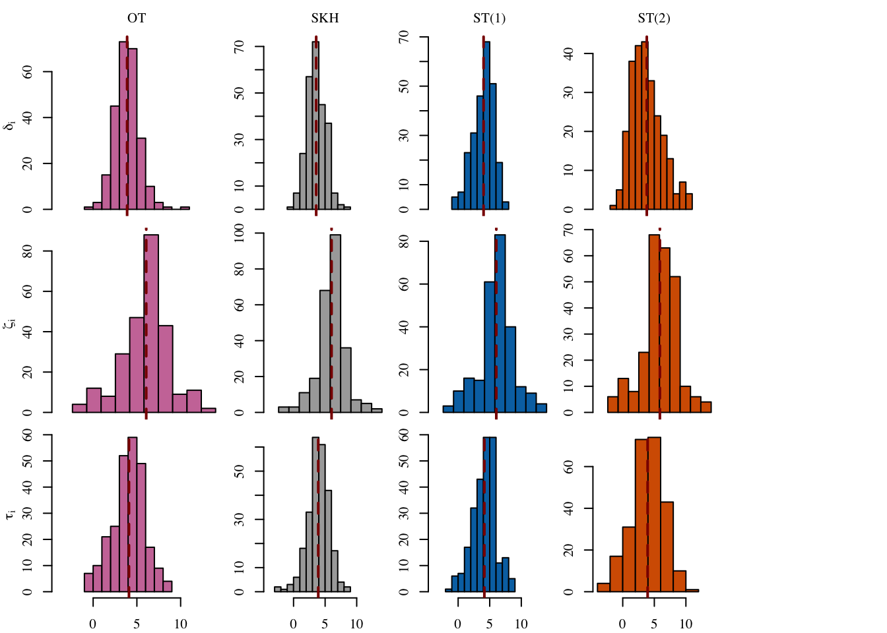
5.3.7 Some Individuals
Let us have a look at some individuals. We focus on the one with the predicted \(\tau_i\) estimated using Optimal Transport which is the closest to the theoretical value, and the one that is the farthest. Let us get the theoretical values:
(tau_theo <- (a1 + a2) * (mu1 - mu0) + a0)[1] 4(tau_med <- tot_effect_med[[1]])[1] 3.943122(tau_ot <- causal_effects_ot$tot_effect)[1] 4.095779(tau_tmatch <- causal_effects_tmatch$tot_effect)[1] 3.937629(tau_skh <- causal_effect_skh[["0.1"]]$tot_effect)[1] 3.915611(tau_sot_12 <- causal_effect_sot_12$tot_effect)[1] 4.15099(tau_sot_21 <- causal_effect_sot_21$tot_effect)[1] 3.94203We create a table that contains the coordinates of individuals from group 0), their transported coordinates (using OT, and sequential transport), and their estimated values for \(\delta_i(0)\), \(\zeta_i(1)\), and \(\tau_i\), obtained with the different counterfactuals.
tb_indiv_0 <-
tibble(
X1 = X0$X1,
X2 = X0$X2,
X1_t = X0_t[, 1], # with OT
X2_t = X0_t[, 2], # idem
X1_tmatch = X0_tmatch[, 1], # with transport-based matching
X2_tmatch = X0_tmatch[, 2], # idem
X1_skh = X0_skh_l[["0.1"]][, 1], # with Regularization
X2_skh = X0_skh_l[["0.1"]][, 2], # idem
X1_sot_12 = X0_st_12[, 1], # with Seq T (1)
X2_sot_12 = X0_st_12[, 2], # idem
X1_sot_21 = X0_st_21[, 1], # with Seq T (2)
X2_sot_21 = X0_st_21[, 2], # idem
# OT
delta_0_i_ot = causal_effects_ot$delta_0_i,
zeta_1_i_ot = causal_effects_ot$zeta_1_i,
# Matching
delta_0_i_tmatch = causal_effects_tmatch$delta_0_i,
zeta_1_i_tmatch = causal_effects_tmatch$zeta_1_i,
# Skh
delta_0_i_skh = causal_effect_skh[["0.1"]]$delta_0_i,
zeta_1_i_skh = causal_effect_skh[["0.1"]]$zeta_1_i,
# ST (1)
delta_0_i_sot_12 = causal_effect_sot_12$delta_0_i,
zeta_1_i_sot_12 = causal_effect_sot_12$zeta_1_i,
# ST (2)
delta_0_i_sot_21 = causal_effect_sot_21$delta_0_i,
zeta_1_i_sot_21 = causal_effect_sot_21$zeta_1_i
) |>
# Total causal effect
mutate(
tau_i_ot = delta_0_i_ot + zeta_1_i_ot,
tau_i_tmatch = delta_0_i_tmatch + zeta_1_i_tmatch,
tau_i_skh = delta_0_i_skh + zeta_1_i_skh,
tau_i_sot_12 = delta_0_i_sot_12 + zeta_1_i_sot_12,
tau_i_sot_21 = delta_0_i_ot + zeta_1_i_sot_21
) |>
# Distance to the theoretical value
mutate(
tau_i_ot_dist = abs(tau_i_ot - tau_theo),
tau_i_tmatch_dist = abs(tau_i_tmatch - tau_theo),
tau_i_skh_dist = abs(tau_i_skh - tau_theo),
tau_i_sot_12_dist = abs(tau_i_sot_12 - tau_theo),
tau_i_sot_21_dist = abs(tau_i_sot_21 - tau_theo)
)In that table, we identify the two untreated units of interest.
ind_closest <- order(tb_indiv_0$tau_i_ot_dist)[1]
ind_farthest <- rev(order(tb_indiv_0$tau_i_ot_dist))[1]Their coordinates are shown in Table 5.1, as well as the coordinates of their counterfactuals.
Codes to create the Table.
format_num <- function(x) scales::number(x, accuracy = 0.1)
tb_indiv_0_short <-
tb_indiv_0 |>
select(-ends_with("dist")) |>
mutate(
across(where(is.numeric),
~format_num(.x)
)
) |>
mutate(
obs_type = case_when(
row_number() == ind_closest ~ "Closest",
row_number() == ind_farthest ~ "Farthest",
TRUE ~ "Other"
)
) |>
filter(obs_type != "Other") |>
mutate(
coord = str_c("(", X1, ", ", X2, ")"),
coord_OT = str_c("(", X1_t, ", ", X2_t, ")"),
coord_TM = str_c("(", X1_tmatch, ", ", X2_tmatch, ")"),
coord_SKH = str_c("(", X1_skh, ", ", X2_skh, ")"),
coord_ST1 = str_c("(", X1_sot_12, ", ", X2_sot_12, ")"),
coord_ST2 = str_c("(", X1_sot_21, ", ", X2_sot_21, ")")
) |>
select(
-X1, -X2, -X1_t, -X2_t, -X1_tmatch, -X2_tmatch,
-X1_skh, -X2_skh,
-X1_sot_12, -X2_sot_12, -X1_sot_21, -X2_sot_21
) |>
pivot_longer(
cols = c(
-obs_type, -coord, -coord_OT, -coord_TM, -coord_SKH, -coord_ST1, -coord_ST2
)
) |>
mutate(
type = case_when(
str_detect(name, "^delta") ~ "delta",
str_detect(name, "^zeta") ~ "zeta",
str_detect(name, "^tau") ~ "tau",
TRUE ~ NA_character_
),
type = factor(
type,
levels = c("delta", "zeta", "tau")
),
method = case_when(
str_detect(name, "_med$") ~ "CM",
str_detect(name, "_ot$") ~ "OT",
str_detect(name, "_tmatch$") ~ "OT-M",
str_detect(name, "_skh$") ~ "SKH",
str_detect(name, "_sot_12$") ~ "ST(1)",
str_detect(name, "sot_21$") ~ "ST(2)",
TRUE ~ ""
)
) |>
select(-name) |>
pivot_wider(
names_from = type, values_from = value
)
# tb_indiv_0_short |>
# select(obs_type, method, delta, zeta, tau) |>
# pivot_longer(cols = c(delta, zeta, tau)) |>
# pivot_wider(names_from = method, values_from = value) |>
# arrange(name, obs_type) |>
# select(-obs_type) |>
# kableExtra::kbl(booktabs = TRUE, format = "latex")
tb_indiv_0_short |>
group_by(obs_type) |>
slice_head(n=1) |>
select(coord, coord_OT, coord_TM, coord_SKH, coord_ST1, coord_ST2) |>
kableExtra::kbl(booktabs = TRUE)| obs_type | coord | coord_OT | coord_TM | coord_SKH | coord_ST1 | coord_ST2 |
|---|---|---|---|---|---|---|
| Closest | (-1.5, -1.4) | (0.6, 0.9) | (0.2, 0.6) | (0.3, 0.6) | (0.5, 1.2) | (0.9, 0.6) |
| Farthest | (-2.4, -3.8) | (1.4, -1.6) | (3.5, -1.5) | (-0.6, -0.9) | (-0.4, -0.4) | (3.0, -1.8) |
The estimation of the direct, indirect and total effects are reported in Table 5.2, depending on the method used to create the counterfactual.
Codes to create the Table.
tb_indiv_0_short |>
select(method, delta, zeta, tau) |>
kableExtra::kbl(booktabs = TRUE)| method | delta | zeta | tau |
|---|---|---|---|
| OT | 4.2 | 4.5 | 8.8 |
| OT-M | 4.1 | 7.7 | 11.8 |
| SKH | 1.0 | 3.4 | 4.4 |
| ST(1) | 1.1 | 3.3 | 4.4 |
| ST(2) | 3.9 | 7.6 | 11.9 |
| OT | 1.3 | 2.7 | 4.0 |
| OT-M | 0.4 | 3.2 | 3.5 |
| SKH | 0.5 | 3.2 | 3.7 |
| ST(1) | -0.4 | 3.7 | 3.3 |
| ST(2) | 1.4 | 3.5 | 4.9 |
Codes to create the Figure
export_tikz <- FALSE
file_name <- "gaussian-tau-two-indiv"
scale <- 1.45
width_tikz <- 3.3*scale
height_tikz <- 1.55*scale
if (export_tikz == TRUE)
tikz(paste0("figs/", file_name, ".tex"), width = width_tikz, height = height_tikz)
# par(mar = c(2.1, 2.1, .1, .1), mfrow = c(1, 2))
layout(matrix(c(1, 2), nrow = 1, byrow = TRUE), widths = c(10,8.1))
par(mar = c(2.1, 2.1, .1, .1))
## Closest----
cex_pts <- .3
lwd_arrow <- 1.5
length_arrow <- .05
plot(
X0,
pch = 16,
col = adjustcolor(colGpe0, alpha = .3),
xlim = x_lim, ylim = y_lim,
xlab = "", ylab = "",
main = "",
family = font_family,
axes = FALSE,
cex = cex_pts
)
axis(1, at = -3:3, labels = TRUE)
axis(2, at = -3:3, labels = TRUE)
title(xlab = "X1", ylab="X2", line=2, cex.lab=1.2, family = font_family)
points(X1, col = adjustcolor(colGpe1, alpha = .3), pch = 16, cex = cex_pts)
# Individuals of interest
# Arrows to OT
arrows(
x0 = X0$X1[c(ind_closest)],
y0 = X0$X2[c(ind_closest)],
x1 = X0_t[c(ind_closest), "X1"],
y1 = X0_t[c(ind_closest), "X2"],
length = length_arrow, col = adjustcolor(colour_methods[["OT"]], alpha = 1),
lwd = lwd_arrow, lty = 2
)
# Arrows to OT-Matching
arrows(
x0 = X0$X1[c(ind_closest)],
y0 = X0$X2[c(ind_closest)],
x1 = X0_tmatch[c(ind_closest), "X1"],
y1 = X0_tmatch[c(ind_closest), "X2"],
length = length_arrow, col = adjustcolor(colour_methods[["OT-M"]], alpha = 1),
lwd = lwd_arrow, lty = 2
)
# Arrows to SKH
arrows(
x0 = X0$X1[c(ind_closest)],
y0 = X0$X2[c(ind_closest)],
x1 = X0_skh_l[["0.1"]][c(ind_closest), "X1"],
y1 = X0_skh_l[["0.1"]][c(ind_closest), "X2"],
length = length_arrow, col = adjustcolor(colour_methods[["skh"]], alpha = 1),
lwd = lwd_arrow, lty = 2
)
# Seq OT (1): X_1 first
# points(
# X0_st_12[c(ind_closest), 1],
# X0$X2[c(ind_closest)],
# col = adjustcolor(colour_methods[["seq_1"]], alpha = .5), pch = 16, cex = 1
# )
arrows(
x0 = X0$X1[c(ind_closest)],
y0 = X0$X2[c(ind_closest)],
x1 = X0_st_12[c(ind_closest), 1],
y1 = X0$X2[c(ind_closest)],
length = length_arrow, col = adjustcolor(colour_methods[["seq_1"]], alpha = .5),
lwd = lwd_arrow
)
arrows(
x0 = X0_st_12[c(ind_closest), 1],
y0 = X0$X2[c(ind_closest)],
x1 = X0_st_12[c(ind_closest), 1],
y1 = X0_st_12[c(ind_closest), 2],
length = length_arrow, col = adjustcolor(colour_methods[["seq_1"]], alpha = .5),
lwd = lwd_arrow
)
arrows(
x0 = X0$X1[c(ind_closest)],
y0 = X0$X2[c(ind_closest)],
x1 = X0$X1[c(ind_closest)],
y1 = X0_st_21[c(ind_closest),2],
length = length_arrow, col = adjustcolor(colour_methods[["seq_2"]], alpha = .5),
lwd = lwd_arrow
)
arrows(
x0 = X0$X1[c(ind_closest)],
y0 = X0_st_21[c(ind_closest),2],
x1 = X0_st_21[c(ind_closest), 1],
y1 = X0_st_21[c(ind_closest), 2],
length = length_arrow, col = adjustcolor(colour_methods[["seq_2"]], alpha = .5),
lwd = lwd_arrow
)
# Individuals
points(
tb_indiv_0$X1[c(ind_closest)],
tb_indiv_0$X2[c(ind_closest)],
col = "black", pch = c(15), cex = 1
)
# Transported values for those individuals (OT)
points(
X0_t[c(ind_closest), "X1"],
X0_t[c(ind_closest), "X2"],
col = colour_methods[["OT"]], pch = c(15), cex = 1
)
# With OT_based matching
points(
X0_tmatch[c(ind_closest), "X1"],
X0_tmatch[c(ind_closest), "X2"],
col = colour_methods[["OT-M"]], pch = c(15), cex = 1
)
# With Sinkhorn
points(
X0_skh_l[["0.1"]][c(ind_closest), "X1"],
X0_skh_l[["0.1"]][c(ind_closest), "X2"],
col = colour_methods[["skh"]], pch = c(15), cex = 1
)
# With Sequential transport (1)
points(
X0_st_12[c(ind_closest), 1],
X0_st_12[c(ind_closest), 2],
col = adjustcolor(colour_methods[["seq_1"]], alpha = 1), pch = 15, cex = 1
)
# With Sequential transport (2)
points(
X0_st_21[c(ind_closest), 1],
X0_st_21[c(ind_closest), 2],
col = adjustcolor(colour_methods[["seq_2"]], alpha = 1), pch = 15, cex = 1
)
if (export_tikz == FALSE) {
lab_points_ot <- latex2exp::TeX("$\\tau_i^{OT}$")
# round(tb_indiv_0$tau_i_ot[c(ind_closest)], 1)
lab_points_tmatch <- latex2exp::TeX("$\\tau_i^{OT-M}$")
# round(tb_indiv_0$tau_i_tmatch[c(ind_closest)], 1)
lab_points_skh <- latex2exp::TeX("$\\tau_i^{SKH}$")
# round(tb_indiv_0$tau_i_skh[c(ind_closest)], 1)
lab_points_sot_12 <- latex2exp::TeX("$\\tau_i^{ST(1)}$")
round(tb_indiv_0$tau_i_sot_12[c(ind_closest)], 1)
lab_points_sot_21 <- latex2exp::TeX("$\\tau_i^{ST(2)}$")
round(tb_indiv_0$tau_i_sot_21[c(ind_closest)], 1)
} else {
lab_points_ot <- "OT"
lab_points_tmatch <- "OT-M"
lab_points_skh <- "SKH"
lab_points_sot_12 <- "ST(1)"
lab_points_sot_21 <- "ST(2)"
}180
4.9 Codes to create the Figure
# \tau_i with OT
text(
x = X0_t[c(ind_closest), "X1"] + 1,
y = X0_t[c(ind_closest), "X2"] + .5,
labels = lab_points_ot,
col = colour_methods[["OT"]]
)
# \tau_i with OT-M
text(
x = X0_tmatch[c(ind_closest), "X1"] -1.5,
y = X0_tmatch[c(ind_closest), "X2"] + .5,
labels = lab_points_tmatch,
col = colour_methods[["OT-M"]]
)
# \tau_i with SKH
text(
x = X0_skh_l[["0.1"]][c(ind_closest), 1] - .25,
y = X0_skh_l[["0.1"]][c(ind_closest), 2] - 1,
labels = lab_points_skh,
col = colour_methods[["skh"]]
)
text(
x = X0_st_12[c(ind_closest), 1],
y = X0_st_12[c(ind_closest), 2] + 1,
labels = lab_points_sot_12,
col = colour_methods[["seq_1"]]
)
text(
x = X0_st_21[c(ind_closest), 1] + 1,
y = X0_st_21[c(ind_closest), 2] - 1,
labels = lab_points_sot_21,
col = colour_methods[["seq_2"]]
)
## Farthest----
par(mar = c(2.1, .1, .1, .1))
plot(
X0,
pch = 16,
col = adjustcolor(colGpe0, alpha = .3),
xlim = x_lim, ylim = y_lim,
xlab = "", ylab = "",
main = "",
family = font_family,
axes = FALSE,
cex = cex_pts
)
axis(1, at = -3:3, labels = TRUE)
# axis(2, at = -3:3, labels = TRUE)
title(xlab = "X1", ylab="X2", line=2, cex.lab=1.2, family = font_family)
points(X1, col = adjustcolor(colGpe1, alpha = .3), pch = 16, cex = cex_pts)
# Individuals of interest
# Arrows to OT
arrows(
x0 = X0$X1[c(ind_farthest)],
y0 = X0$X2[c(ind_farthest)],
x1 = X0_t[c(ind_farthest), "X1"],
y1 = X0_t[c(ind_farthest), "X2"],
length = length_arrow, col = adjustcolor(colour_methods[["OT"]], alpha = 1),
lwd = lwd_arrow, lty = 2
)
# Arrows to OT-Matching
arrows(
x0 = X0$X1[c(ind_farthest)],
y0 = X0$X2[c(ind_farthest)],
x1 = X0_tmatch[c(ind_farthest), "X1"],
y1 = X0_tmatch[c(ind_farthest), "X2"],
length = length_arrow, col = adjustcolor(colour_methods[["OT-M"]], alpha = 1),
lwd = lwd_arrow, lty = 2
)
# Arrows to SKH
arrows(
x0 = X0$X1[c(ind_farthest)],
y0 = X0$X2[c(ind_farthest)],
x1 = X0_skh_l[["0.1"]][c(ind_farthest), "X1"],
y1 = X0_skh_l[["0.1"]][c(ind_farthest), "X2"],
length = length_arrow, col = adjustcolor(colour_methods[["skh"]], alpha = 1),
lwd = lwd_arrow, lty = 2
)
# Seq OT (1): X_1 first
# points(
# X0_st_12[c(ind_farthest), 1],
# X0$X2[c(ind_farthest)],
# col = adjustcolor(colour_methods[["seq_1"]], alpha = .5), pch = 16, cex = 1
# )
arrows(
x0 = X0$X1[c(ind_farthest)],
y0 = X0$X2[c(ind_farthest)],
x1 = X0_st_12[c(ind_farthest), 1],
y1 = X0$X2[c(ind_farthest)],
length = length_arrow, col = adjustcolor(colour_methods[["seq_1"]], alpha = .5),
lwd = lwd_arrow
)
arrows(
x0 = X0_st_12[c(ind_farthest), 1],
y0 = X0$X2[c(ind_farthest)],
x1 = X0_st_12[c(ind_farthest), 1],
y1 = X0_st_12[c(ind_farthest), 2],
length = length_arrow, col = adjustcolor(colour_methods[["seq_1"]], alpha = .5),
lwd = lwd_arrow
)
# Seq OT (2): X_2 first
# points(
# X0$X1[c(ind_farthest)],
# X0_st_21[c(ind_farthest),2],
# col = adjustcolor(colour_methods[["seq_2"]], alpha = .5), pch = 16, cex = 1
# )
arrows(
x0 = X0$X1[c(ind_farthest)],
y0 = X0$X2[c(ind_farthest)],
x1 = X0$X1[c(ind_farthest)],
y1 = X0_st_21[c(ind_farthest),2],
length = length_arrow, col = adjustcolor(colour_methods[["seq_2"]], alpha = .5),
lwd = lwd_arrow
)
arrows(
x0 = X0$X1[c(ind_farthest)],
y0 = X0_st_21[c(ind_farthest),2],
x1 = X0_st_21[c(ind_farthest), 1],
y1 = X0_st_21[c(ind_farthest), 2],
length = length_arrow, col = adjustcolor(colour_methods[["seq_2"]], alpha = .5),
lwd = lwd_arrow
)
# Individuals
points(
tb_indiv_0$X1[c(ind_farthest)],
tb_indiv_0$X2[c(ind_farthest)],
col = "black", pch = c(15), cex = 1
)
# Transported values for those individuals (OT)
points(
X0_t[c(ind_farthest), "X1"],
X0_t[c(ind_farthest), "X2"],
col = colour_methods[["OT"]], pch = c(15), cex = 1
)
# With OT-Matching
points(
X0_tmatch[c(ind_farthest), "X1"],
X0_tmatch[c(ind_farthest), "X2"],
col = colour_methods[["OT-M"]], pch = c(15), cex = 1
)
# With Sinkhorn
points(
X0_skh_l[["0.1"]][c(ind_farthest), "X1"],
X0_skh_l[["0.1"]][c(ind_farthest), "X2"],
col = colour_methods[["skh"]], pch = c(15), cex = 1
)
# With Sequential transport (1)
points(
X0_st_12[c(ind_farthest), 1],
X0_st_12[c(ind_farthest), 2],
col = adjustcolor(colour_methods[["seq_1"]], alpha = 1), pch = 15, cex = 1
)
# With Sequential transport (2)
points(
X0_st_21[c(ind_farthest), 1],
X0_st_21[c(ind_farthest), 2],
col = adjustcolor(colour_methods[["seq_2"]], alpha = 1), pch = 15, cex = 1
)
if (export_tikz == FALSE) {
lab_points_ot <- latex2exp::TeX("$\\tau_i^{OT}")
lab_points_tmatch <- latex2exp::TeX("$\\tau_i^{OT-M}$")
lab_points_skh <- latex2exp::TeX("$\\tau_i^{SKH}$")
lab_points_sot_12 <- latex2exp::TeX("$\\tau_i^{ST(1)}$")
lab_points_sot_21 <- latex2exp::TeX("$\\tau_i^{ST(2)}$")
} else {
lab_points_ot <- "OT"
lab_points_tmatch <- "OT-M"
lab_points_skh <- "SKH"
lab_points_sot_12 <- "ST(1)"
lab_points_sot_21 <- "ST(2)"
}
# \tau with OT
text(
x = X0_t[c(ind_farthest), "X1"],
y = X0_t[c(ind_farthest), "X2"] + .75,
labels = lab_points_ot,
col = colour_methods[["OT"]]
)
# \tau with OT-Matching
text(
x = X0_tmatch[c(ind_farthest), "X1"] - .25,
y = X0_tmatch[c(ind_farthest), "X2"] + 1,
labels = lab_points_tmatch,
col = colour_methods[["OT-M"]]
)
text(
x = X0_skh_l[["0.1"]][c(ind_farthest), "X1"] - 1.5,
y = X0_skh_l[["0.1"]][c(ind_farthest), "X2"],
labels = lab_points_skh,
col = colour_methods[["skh"]]
)
text(
x = X0_st_12[c(ind_farthest), 1],
y = X0_st_12[c(ind_farthest), 2] + 1,
labels = lab_points_sot_12,
col = colour_methods[["seq_1"]]
)
text(
x = X0_st_21[c(ind_farthest), 1],
y = X0_st_21[c(ind_farthest), 2] - 1,
labels = lab_points_sot_21,
col = colour_methods[["seq_2"]]
)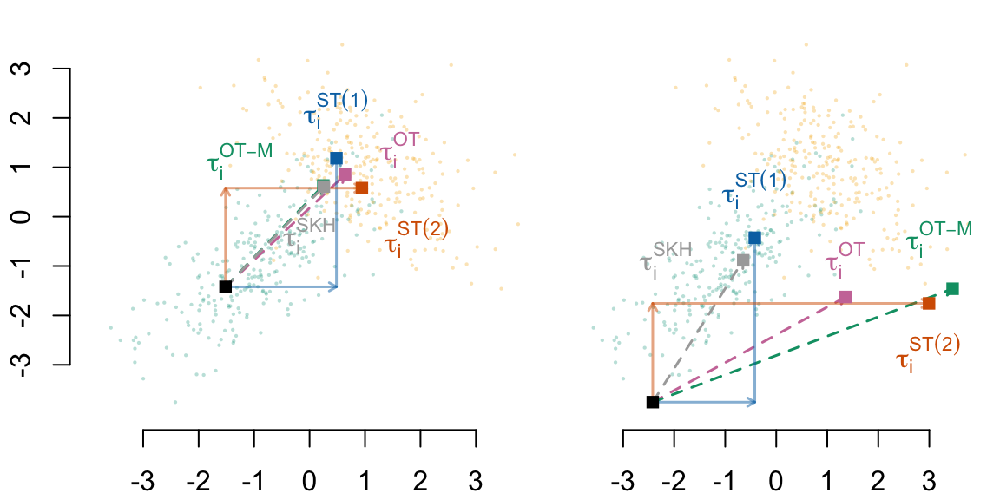
Codes to create the Figure
if (export_tikz == TRUE) {
dev.off()
plot_to_pdf(filename = file_name, path = "./figs/", keep_tex = FALSE, crop = FALSE)
}5.4 Monte-Carlo Simulations
Let us perform Monte-Carlo simulations to observe the stability of the previous estimations. We define a function, sim_f(), to perform three steps:
- Generate a sample from the DGP shown in Section 13.1,
- Build the counterfactuals using OT, entropy regularized transport, and Sequential transport as in Section 5.2,
- Compute the causal effects as in Section 5.3.
The sim_f() function.
sim_f <- function(n = 500,
mu0,
mu1,
r0,
r1,
a,
seed = NULL) {
if (!is.null(seed)) set.seed(seed)
# 1. Generate data
df <- gen_data(
n = 500,
mu0 = mu0, mu1 = mu1,
r0 = r0, r1 = r1, a = a,
seed = seed
)
# 2. Building Counterfactuals
## With Optimal Transport
# Transporting map for source: group 1, target: group 0 (careful here)
Sigma0 <- matrix(c(1, r0, r0, 1), 2, 2)
Sigma1 <- matrix(c(1, r1, r1, 1), 2, 2)
Mu0 <- rep(a * mu0, 2)
Mu1 <- rep(a * mu1, 2)
# Mapping from group 0 to group 1
ot_map_0_to_1 <- compute_ot_map(
mu_source = Mu0, sigma_source = Sigma0,
mu_target = Mu1, sigma_target = Sigma1
)
# Mapping from group 1 to group 0
ot_map_1_to_0 <- compute_ot_map(
mu_source = Mu1, sigma_source = Sigma0,
mu_target = Mu0, sigma_target = Sigma0
)
# Apply transport map to treated units (A = 1)
X0 <- as.matrix(df[df$A == 0, c("X1", "X2")])
X1 <- as.matrix(df[df$A == 1, c("X1", "X2")])
X0_t <- apply_ot_transport(X = X0, mapping = ot_map_0_to_1)
colnames(X0_t) <- c(c("X1", "X2"))
X1_t <- apply_ot_transport(X = X1, mapping = ot_map_1_to_0)
colnames(X1_t) <- c(c("X1", "X2"))
# With OT-Matching
X0_tmatch <- transport_many_to_one(X_source = X0, X_target = X1)
X1_tmatch <- transport_many_to_one(X_source = X1, X_target = X0)
## With Entropy regularized transport
# Transport from group 0 to group 1:
X0_skh <- transport_regul(
X_source = X0,
X_target = X1,
gamma = 0.1
)
# Transport from group 1 to group 0:
X1_skh <- transport_regul(
X_source = X1,
X_target = X0,
gamma = 0.1
)
## With Sequential Transport
# Transport from group 0 to group 1: X1 then X2 | X1
X0_st_12 <- sequential_transport_12(
X = X0, M_source = Mu0, S_source = Sigma0, M_target = Mu1, S_target = Sigma1
)
# Transport from group 1 to group 0: X1 then X2 | X1
X1_st_12 <- sequential_transport_12(
X = X1, M_source = Mu1, S_source = Sigma1, M_target = Mu0, S_target = Sigma0
)
# Transport from group 0 to group 1: X2 then X1 | X2
X0_st_21 <- sequential_transport_21(
X = X0, M_source = Mu0, S_source = Sigma0, M_target = Mu1, S_target = Sigma1
)
# Transport from group 1 to group 0: X2 then X1 | X2
X1_st_21 <- sequential_transport_21(
X = X1, M_source = Mu1, S_source = Sigma1, M_target = Mu0, S_target = Sigma0
)
# 3. Measuring Total Causal Effect
tb <- df[, c("Y", "A", "X1", "X2")]
A_name <- "A"
A_untreated <- 0
Y_name <- "Y"
# Causal Mediation Analysis
med_mod_12 <- mediation::multimed(
outcome = "Y",
med.main = "X1",
med.alt = "X2",
treat = "A",
data = df
)
med_mod_21 <- mediation::multimed(
outcome = "Y",
med.main = "X2",
med.alt = "X1",
treat = "A",
data = df
)
delta_0_med <- mean((med_mod_12$d0.lb + med_mod_12$d0.ub) / 2) +
mean((med_mod_21$d0.lb + med_mod_21$d0.ub) / 2)
delta_1_med <- mean((med_mod_12$d1.lb + med_mod_12$d1.ub) / 2) +
mean((med_mod_21$d1.lb + med_mod_21$d1.ub) / 2)
tot_effect_med <- med_mod_12$tau
zeta_0_med <- tot_effect_med - delta_1_med
zeta_1_med <- tot_effect_med-delta_0_med
# With OT counterfactuals
tb_untreated <- tb |> filter(!!sym(A_name) == !!A_untreated)
tb_treated <- tb |> filter(!!sym(A_name) != !!A_untreated)
causal_effects_ot <- causal_effects_cf(
data_untreated = tb_untreated,
data_treated = tb_treated,
data_cf_untreated = as_tibble(X0_t),
data_cf_treated = as_tibble(X1_t),
Y_name = Y_name,
A_name = A_name,
A_untreated = A_untreated
)
# With OT-Matching counterfactuals
causal_effects_tmatch <- causal_effects_cf(
data_untreated = tb_untreated,
data_treated = tb_treated,
data_cf_untreated = as_tibble(X0_tmatch),
data_cf_treated = as_tibble(X1_tmatch),
Y_name = Y_name,
A_name = A_name,
A_untreated = A_untreated
)
# With entropy regularized transport
causal_effects_skh <- causal_effects_cf(
data_untreated = tb_untreated,
data_treated = tb_treated,
data_cf_untreated = as_tibble(X0_skh),
data_cf_treated = as_tibble(X1_skh),
Y_name = Y_name,
A_name = A_name,
A_untreated = A_untreated
)
# With Sequential Transport counterfactuals
causal_effect_sot_12 <- causal_effects_cf(
data_untreated = tb_untreated,
data_treated = tb_treated,
data_cf_untreated = as_tibble(X0_st_12) |> magrittr::set_colnames(c("X1", "X2")),
data_cf_treated = as_tibble(X1_st_12) |> magrittr::set_colnames(c("X1", "X2")),
Y_name = Y_name,
A_name = A_name,
A_untreated = A_untreated
)
causal_effect_sot_21 <- causal_effects_cf(
data_untreated = tb_untreated,
data_treated = tb_treated,
data_cf_untreated = as_tibble(X0_st_21) |> magrittr::set_colnames(c("X1", "X2")),
data_cf_treated = as_tibble(X1_st_21) |> magrittr::set_colnames(c("X1", "X2")),
Y_name = Y_name,
A_name = A_name,
A_untreated = A_untreated
)
tibble(
# Mediation
delta_0_med = delta_0_med,
delta_1_med = delta_1_med,
zeta_0_med = zeta_0_med,
zeta_1_med = zeta_1_med,
tot_effect_med = tot_effect_med,
# OT
delta_0_ot = causal_effects_ot$delta_0,
delta_1_ot = causal_effects_ot$delta_1,
delta_0_ot_obs = causal_effects_ot$delta_0_obs,
delta_1_ot_obs = causal_effects_ot$delta_1_obs,
zeta_0_ot = causal_effects_ot$zeta_0,
zeta_1_ot = causal_effects_ot$zeta_1,
tot_effect_ot = causal_effects_ot$tot_effect,
tot_effect_ot_obs = causal_effects_ot$tot_effect_obs,
# OT-M
delta_0_tmatch = causal_effects_tmatch$delta_0,
delta_1_tmatch = causal_effects_tmatch$delta_1,
delta_0_tmatch_obs = causal_effects_tmatch$delta_0_obs,
delta_1_tmatch_obs = causal_effects_tmatch$delta_1_obs,
zeta_0_tmatch = causal_effects_tmatch$zeta_0,
zeta_1_tmatch = causal_effects_tmatch$zeta_1,
tot_effect_tmatch = causal_effects_tmatch$tot_effect,
tot_effect_tmatch_obs = causal_effects_tmatch$tot_effect_obs,
# SKH
delta_0_skh = causal_effects_skh$delta_0,
delta_1_skh = causal_effects_skh$delta_1,
delta_0_skh_obs = causal_effects_skh$delta_0_obs,
delta_1_skh_obs = causal_effects_skh$delta_1_obs,
zeta_0_skh = causal_effects_skh$zeta_0,
zeta_1_skh = causal_effects_skh$zeta_1,
tot_effect_skh = causal_effects_skh$tot_effect,
tot_effect_skh_obs = causal_effects_skh$tot_effect_obs,
# SOT 12
delta_0_sot_12 = causal_effect_sot_12$delta_0,
delta_1_sot_12 = causal_effect_sot_12$delta_1,
delta_0_sot_12_obs = causal_effect_sot_12$delta_0_obs,
delta_1_sot_12_obs = causal_effect_sot_12$delta_1_obs,
zeta_0_sot_12 = causal_effect_sot_12$zeta_0,
zeta_1_sot_12 = causal_effect_sot_12$zeta_1,
tot_effect_sot_12 = causal_effect_sot_12$tot_effect,
tot_effect_sot_12_obs = causal_effect_sot_12$tot_effect_obs,
# SOT 21
delta_0_sot_21 = causal_effect_sot_21$delta_0,
delta_1_sot_21 = causal_effect_sot_21$delta_1,
delta_0_sot_21_obs = causal_effect_sot_21$delta_0_obs,
delta_1_sot_21_obs = causal_effect_sot_21$delta_1_obs,
zeta_0_sot_21 = causal_effect_sot_21$zeta_0,
zeta_1_sot_21 = causal_effect_sot_21$zeta_1,
tot_effect_sot_21 = causal_effect_sot_21$tot_effect,
tot_effect_sot_21_obs = causal_effect_sot_21$tot_effect_obs,
n = n,
seed = seed,
mu0 = mu0,
mu1 = mu1,
r0 = r0,
r1 = r1,
a = a
)
}The simulations can be run in parallel, as follows.
# This chunk takes 3 minutes and 40 seconds to run
# (MB Pro 2023, Apple M2 Pro ship, 32 GB RAM).
# We do not evaluate when compiling the document.
# Instead, we load previously obtained results.
library(pbapply)
library(parallel)
ncl <- detectCores()-1
(cl <- makeCluster(ncl))
clusterEvalQ(cl, {
library(tidyverse)
library(mnormt)
library(expm)
library(randomForest)
}) |>
invisible()
clusterExport(
cl = cl, c(
"gen_data", "compute_ot_map", "apply_ot_transport",
"transport_regul", "transport_many_to_one",
"sequential_transport_12", "sequential_transport_21",
"causal_effects_cf", "sim_f"
)
)
res_sim <- pbapply::pblapply(1:200, function(seed) {
sim_f(n = 500, mu0 = -1, mu1 = +1, r0 = +.7, r1 = -.5, a = 1, seed = seed)
}, cl = cl)
stopCluster(cl)
res_sim <- list_rbind(res_sim)
save(res_sim, file = "../output/res_sim-gaussian-mc-a1.rda")We load previously obtained results:
load("../output/res_sim-gaussian-mc-a1.rda")Codes to create the Figure.
#' @parma metric_name Name of the metric (e.g., "tot_effect_ot")
#' @param method_label Label of the method (for title, e.g., "OT")
plot_hist_sim <- function(metric_name,
method_label,
x_lim = NULL,
y_axis = TRUE,
export_tikz = FALSE) {
# type <- match.arg(type)
type <- case_when(
str_detect(metric_name, "^delta") ~ "delta",
str_detect(metric_name, "^zeta") ~ "zeta",
str_detect(metric_name, "^tot_effect") & !str_detect(metric_name, "obs$") ~ "tau",
str_detect(metric_name, "^tot_effect") & str_detect(metric_name, "obs$") ~ "theta",
TRUE ~ NA_character_
)
group <- case_when(
str_detect(metric_name, "_0_") ~ "0",
str_detect(metric_name, "_1_") ~ "1",
TRUE ~ ""
)
if (type == "delta") {
title_lab <- paste0("$\\bar{\\delta}_", group, "$, ", method_label)
} else if (type == "zeta") {
title_lab <- paste0("$\\bar{\\zeta}_", group, "$, ", method_label)
} else if (type == "tau") {
title_lab <- paste0("$\\bar{\\tau}$, ", method_label)
} else {
title_lab <- paste0("$\\bar{\\theta}$, ", method_label)
}
if (export_tikz == FALSE) {
title_lab <- latex2exp::TeX(title_lab)
}
if (group == "0") {
fill_col <- colGpe0
} else if (group == "1") {
fill_col <- colGpe1
} else {
fill_col <- "gray"
}
if (is.null(x_lim)) x_lim <- range(res_sim |> pull(!!metric_name))
hist(
res_sim |> pull(!!metric_name),
main = title_lab,
xlab = "",
col = adjustcolor(fill_col, alpha = .5),
xlim = x_lim,
axes = FALSE
)
axis(1)
if (y_axis == TRUE) axis(2)
if (type == "delta") {
abline(v = (a1+a2)*(mu1-mu0), col = "darkred", lty = 2, lwd = 2)
} else if (type == "zeta") {
abline(v = a0, col = "darkred", lty = 2, lwd = 2)
} else if (type %in% c("tau", "theta")) {
abline(v = (a1+a2)*(mu1-mu0) + a0, col = "darkred", lty = 2, lwd = 2)
}
}
export_tikz <- FALSE
file_name <- "gaussian-hist-mc"
if (export_tikz == TRUE)
tikz(paste0("figs/", file_name, ".tex"), width = 2.8, height = 2.8)
par(mar = c(2.1, 2.1, 2.1, .5), mfrow = c(6, 3))
# CM
x_lim <- c(0,5); plot_hist_sim(metric_name = "delta_0_med", method_label = "CM", x_lim = x_lim, export_tikz = export_tikz)
x_lim <- c(-1,5); plot_hist_sim(metric_name = "zeta_1_med", method_label = "CM", x_lim = x_lim, export_tikz = export_tikz)
x_lim <- c(3,5); plot_hist_sim(metric_name = "tot_effect_med", method_label = "CM", x_lim = x_lim, export_tikz = export_tikz)
# OT
x_lim <- c(0,5); plot_hist_sim(metric_name = "delta_0_ot", method_label = "OT", x_lim = x_lim, export_tikz = export_tikz)
x_lim <- c(-1,5); plot_hist_sim(metric_name = "zeta_1_ot", method_label = "OT", x_lim = x_lim, export_tikz = export_tikz)
x_lim <- c(3,5); plot_hist_sim(metric_name = "tot_effect_ot", method_label = "OT", x_lim = x_lim, export_tikz = export_tikz)
# OT-M
x_lim <- c(0,5); plot_hist_sim(metric_name = "delta_0_tmatch", method_label = "OT-M", x_lim = x_lim, export_tikz = export_tikz)
x_lim <- c(-1,5); plot_hist_sim(metric_name = "zeta_1_tmatch", method_label = "OT-M", x_lim = x_lim, export_tikz = export_tikz)
x_lim <- c(3,5); plot_hist_sim(metric_name = "tot_effect_tmatch", method_label = "OT-M", x_lim = x_lim, export_tikz = export_tikz)
# SKH
x_lim <- c(0,5); plot_hist_sim(metric_name = "delta_0_skh", method_label = "SKH", x_lim = x_lim, export_tikz = export_tikz)
x_lim <- c(-1,5); plot_hist_sim(metric_name = "zeta_1_skh", method_label = "SKH", x_lim = x_lim, export_tikz = export_tikz)
x_lim <- c(3,5); plot_hist_sim(metric_name = "tot_effect_skh", method_label = "SKH", x_lim = x_lim, export_tikz = export_tikz)
# ST(1)
x_lim <- c(0,5); plot_hist_sim(metric_name = "delta_0_sot_12", method_label = "ST (1)", x_lim = x_lim, export_tikz = export_tikz)
x_lim <- c(-1,5); plot_hist_sim(metric_name = "zeta_1_sot_12", method_label = "ST (1)", x_lim = x_lim, export_tikz = export_tikz)
x_lim <- c(3,5); plot_hist_sim(metric_name = "tot_effect_sot_12", method_label = "ST (1)", x_lim= x_lim, export_tikz = export_tikz)
# ST(2)
x_lim <- c(0,5); plot_hist_sim(metric_name = "delta_0_sot_21", method_label = "ST (2)", x_lim = x_lim, export_tikz = export_tikz)
x_lim <- c(-1,5); plot_hist_sim(metric_name = "zeta_1_sot_21", method_label = "ST (2)", x_lim = x_lim, export_tikz = export_tikz)
x_lim <- c(3,5); plot_hist_sim(metric_name = "tot_effect_sot_21", method_label = "ST (2)", x_lim= x_lim, export_tikz = export_tikz)
if (export_tikz == TRUE) {
dev.off()
plot_to_pdf(filename = file_name, path = "./figs/", keep_tex = FALSE, crop = TRUE)
}
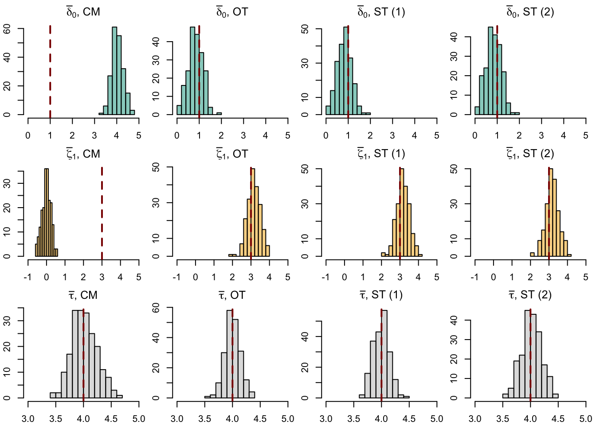
Codes to create the Figure.
par(mar = c(2.1, 2.1, 2.1, .5), mfrow = c(6, 3))
# CM
x_lim <- c(0,5); plot_hist_sim(metric_name = "delta_1_med", method_label = "CM", x_lim = x_lim, export_tikz = export_tikz)
x_lim <- c(-1,5); plot_hist_sim(metric_name = "zeta_0_med", method_label = "CM", x_lim = x_lim, export_tikz = export_tikz)
x_lim <- c(3,5); plot_hist_sim(metric_name = "tot_effect_med", method_label = "CM", x_lim = x_lim, export_tikz = export_tikz)
# OT
x_lim <- c(0,5); plot_hist_sim(metric_name = "delta_1_ot", method_label = "OT", x_lim = x_lim, export_tikz = export_tikz)
x_lim <- c(-1,5); plot_hist_sim(metric_name = "zeta_0_ot", method_label = "OT", x_lim = x_lim, export_tikz = export_tikz)
x_lim <- c(3,5); plot_hist_sim(metric_name = "tot_effect_ot", method_label = "OT", x_lim = x_lim, export_tikz = export_tikz)
# OT-M
x_lim <- c(0,5); plot_hist_sim(metric_name = "delta_1_tmatch", method_label = "OT-M", x_lim = x_lim, export_tikz = export_tikz)
x_lim <- c(-1,5); plot_hist_sim(metric_name = "zeta_0_tmatch", method_label = "OT-M", x_lim = x_lim, export_tikz = export_tikz)
x_lim <- c(3,5); plot_hist_sim(metric_name = "tot_effect_tmatch", method_label = "OT-M", x_lim = x_lim, export_tikz = export_tikz)
# SKH
x_lim <- c(0,5); plot_hist_sim(metric_name = "delta_1_skh", method_label = "SKH", x_lim = x_lim, export_tikz = export_tikz)
x_lim <- c(-1,5); plot_hist_sim(metric_name = "zeta_0_skh", method_label = "SKH", x_lim = x_lim, export_tikz = export_tikz)
x_lim <- c(3,5); plot_hist_sim(metric_name = "tot_effect_skh", method_label = "SKH", x_lim = x_lim, export_tikz = export_tikz)
# ST(1)
x_lim <- c(0,5); plot_hist_sim(metric_name = "delta_1_sot_12", method_label = "ST (1)", x_lim = x_lim, export_tikz = export_tikz)
x_lim <- c(-1,5); plot_hist_sim(metric_name = "zeta_0_sot_12", method_label = "ST (1)", x_lim = x_lim, export_tikz = export_tikz)
x_lim <- c(3,5); plot_hist_sim(metric_name = "tot_effect_sot_12", method_label = "ST (1)", x_lim= x_lim, export_tikz = export_tikz)
# ST(2)
x_lim <- c(0,5); plot_hist_sim(metric_name = "delta_1_sot_21", method_label = "ST (2)", x_lim = x_lim, export_tikz = export_tikz)
x_lim <- c(-1,5); plot_hist_sim(metric_name = "zeta_0_sot_21", method_label = "ST (2)", x_lim = x_lim, export_tikz = export_tikz)
x_lim <- c(3,5); plot_hist_sim(metric_name = "tot_effect_sot_21", method_label = "ST (2)", x_lim= x_lim, export_tikz = export_tikz)
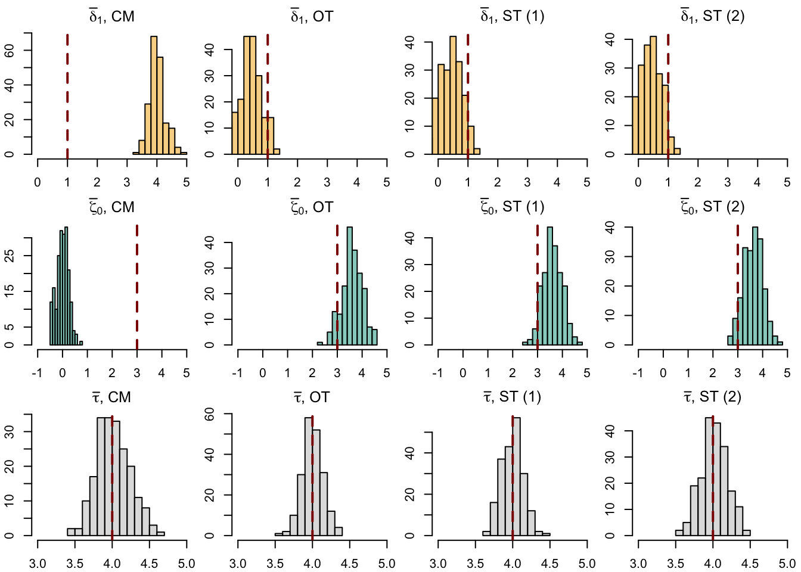
The comparison of the estimates made using observed values for \(y\) (whenever observed) is shown in Figure 5.9.
Codes to create the Figure.
par(mar = c(2.1, 2.1, 2.1, .5), mfrow = c(6,2))
x_lim <- c(3,5)
plot_hist_sim(metric_name = "tot_effect_ot", method_label = "OT", x_lim = x_lim, export_tikz = export_tikz)
plot_hist_sim(metric_name = "tot_effect_tmatch", method_label = "OT-M", x_lim = x_lim, export_tikz = export_tikz)
plot_hist_sim(metric_name = "tot_effect_ot_obs", method_label = "OT", x_lim = x_lim, export_tikz = export_tikz)
plot_hist_sim(metric_name = "tot_effect_tmatch_obs", method_label = "OT-M", x_lim = x_lim, export_tikz = export_tikz)
plot_hist_sim(metric_name = "tot_effect_skh", method_label = "SKH", x_lim = x_lim, export_tikz = export_tikz)
plot_hist_sim(metric_name = "tot_effect_sot_12", method_label = "ST (1)", x_lim = x_lim, export_tikz = export_tikz)
plot_hist_sim(metric_name = "tot_effect_skh_obs", method_label = "SKH", x_lim = x_lim, export_tikz = export_tikz)
plot_hist_sim(metric_name = "tot_effect_sot_12_obs", method_label = "ST (1)", x_lim = x_lim, export_tikz = export_tikz)
plot_hist_sim(metric_name = "tot_effect_sot_21", method_label = "ST (2)", x_lim = x_lim, export_tikz = export_tikz)
plot.new()
plot_hist_sim(metric_name = "tot_effect_sot_21_obs", method_label = "ST (2)", x_lim = x_lim, export_tikz = export_tikz)
plot.new()
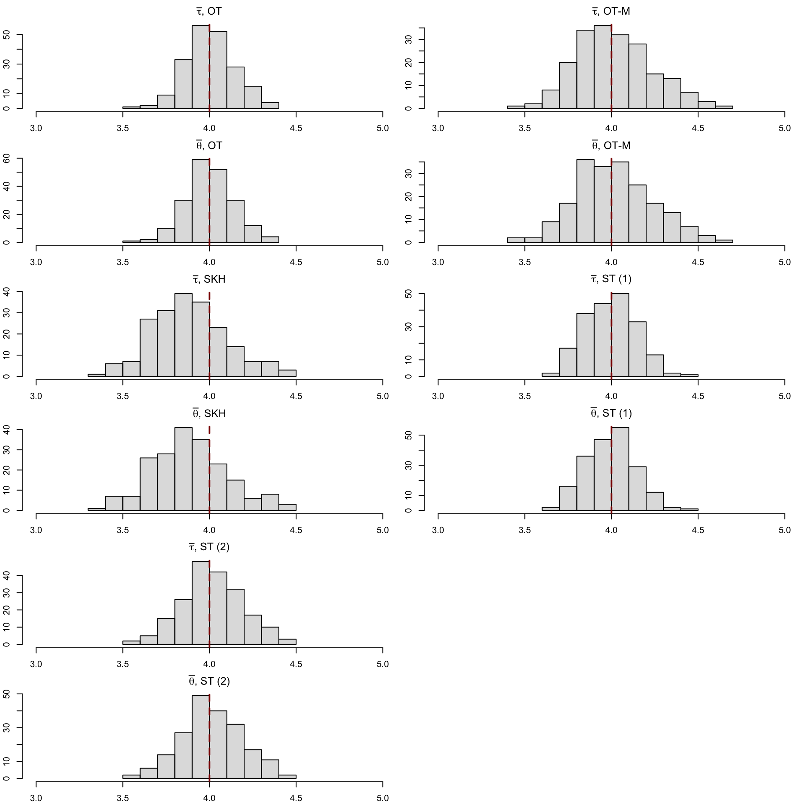
We also use violin plots, since exporting these histograms in a two-column format paper is not a good idea.
Codes to create the Figure.
export_pdf <- FALSE
p <- ggplot(
data = res_sim |>
select(
delta_0_med, delta_0_ot, delta_0_tmatch,
delta_0_skh, delta_0_sot_12, delta_0_sot_21,
#
zeta_1_med, zeta_1_ot, zeta_1_tmatch,
zeta_1_skh, zeta_1_sot_12, zeta_1_sot_21,
#
tot_effect_med, tot_effect_ot, tot_effect_tmatch,
tot_effect_skh, tot_effect_sot_12, tot_effect_sot_21
) |>
mutate(row = row_number()) |>
pivot_longer(cols = -row) |>
mutate(
type = case_when(
str_detect(name, "^delta") ~ "delta",
str_detect(name, "^zeta") ~ "zeta",
str_detect(name, "^tot_effect") & !str_detect(name, "obs$") ~ "tau",
TRUE ~ NA_character_
),
type = factor(
type,
levels = c("delta", "zeta", "tau"),
labels = c("$\\bar{\\delta}(0)$", "$\\bar{\\zeta}(1)$",
"$\\bar{\\tau}$")
),
method = case_when(
str_detect(name, "_med$") ~ "CM",
str_detect(name, "_ot$") ~ "OT",
str_detect(name, "_tmatch$") ~ "OT-M",
str_detect(name, "_skh$") ~ "SKH",
str_detect(name, "_sot_12$") ~ "ST(1)",
str_detect(name, "sot_21$") ~ "ST(2)",
TRUE ~ ""
),
method = factor(
method, levels = rev(c("CM", "OT", "OT-M", "SKH", "ST(1)", "ST(2)"))
)
)
) +
geom_violin(
mapping = aes(x = value, y = method, fill = method),
draw_quantiles = c(.25, .5, .75)) +
labs(x = NULL, y = NULL)Warning: The `draw_quantiles` argument of `geom_violin()` is deprecated as of ggplot2
4.0.0.
ℹ Please use the `quantiles.linetype` argument instead.Codes to create the Figure.
if (export_pdf == TRUE) {
p <- p +
facet_wrap(
~ type, scales = "free_x"
)
} else {
p <- p +
facet_wrap(
~ type, scales = "free_x",
labeller = as_labeller(latex2exp::TeX, default = label_parsed)
)
}
p <- p +
geom_vline(
data = tibble(
type = c("$\\bar{\\delta}(0)$", "$\\bar{\\zeta}(1)$",
"$\\bar{\\tau}$"),
val_theo = c(
(a1+a2)*(mu1-mu0),
a0,
(a1+a2)*(mu1-mu0) + a0
)
) |>
mutate(
type = factor(
type,
levels = c("$\\bar{\\delta}(0)$", "$\\bar{\\zeta}(1)$",
"$\\bar{\\tau}$")
)
),
mapping = aes(xintercept = val_theo),
colour = "darkred", linetype = "dashed", linewidth = 1
) +
scale_fill_manual(
NULL,
values = c(
"CM" = "#56B4E9",
"OT" = colour_methods[["OT"]],
"OT-M" = colour_methods[["OT-M"]],
"SKH" = colour_methods[["skh"]],
"ST(1)" = colour_methods[["seq_1"]],
"ST(2)" = colour_methods[["seq_2"]]
),
guide = "none"
) +
theme_paper()
p
if (export_pdf == TRUE) {
ggplot2_to_pdf(
plot = p + theme(panel.spacing = unit(0.4, "lines")) +
scale_x_continuous(
labels = function(x) paste0("$", x, "$")
),
filename = "gaussian-violin-mc", path = "figs/",
width = 3.4, height = 2,
crop = TRUE
)
system(paste0("pdfcrop figs/gaussian-violin-mc.pdf figs/gaussian-violin-mc.pdf"))
}
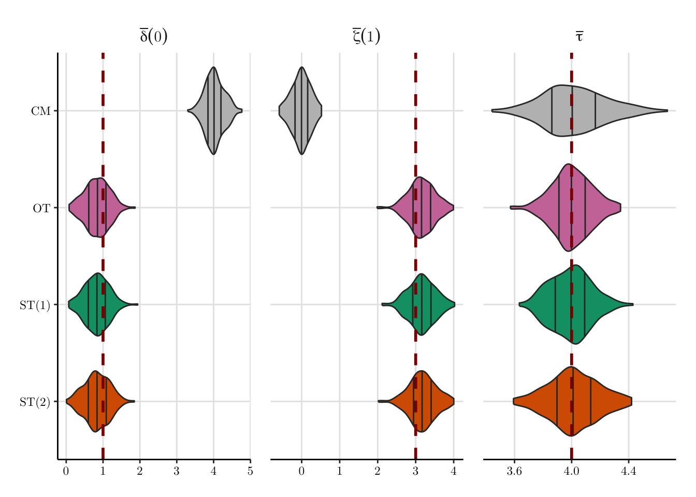